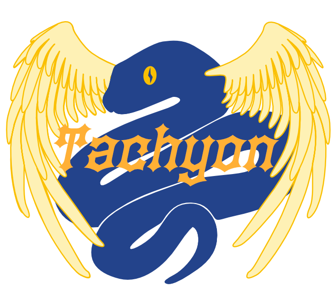

O que há de novo no Python 3.15¶
- Editor:
Hugo van Kemenade
This article explains the new features in Python 3.15, compared to 3.14. Python 3.15 was released on 9 October 2026. For full details, see the changelog.
Ver também
PEP 790 – Python 3.15 release schedule
Resumo – Destaques da versão¶
Python 3.15 is the latest stable release of the Python programming language, with a mix of changes to the language, the implementation, and the standard library. The biggest changes include lazy imports, frozendict and sentinel builtins, UTF-8 as the default encoding, unpacking in comprehensions, and a stable ABI for free-threaded builds.
As alterações na biblioteca incluem um novo pacote de perfilamento com o Tachyon — uma ferramenta de perfilamento baseada em amostragem estatística de alta frequência —, mais cores na saída da linha de comando, bem como as habituais descontinuações e remoções, além de melhorias na usabilidade e na correção.
Este artigo não tenta fornecer uma especificação completa de todos os novos recursos, mas fornece uma visão geral conveniente. Para detalhes completos, consulte a documentação, como Referência da Biblioteca e Referência da Linguagem. Para entender a implementação completa e a justificativa do design para uma mudança, consulte a PEP para um novo recurso específico; mas observe que as PEPs geralmente não são mantidas atualizadas depois que um recurso é totalmente implementado.
Consulte Portando para o Python 3.15 para obter orientações sobre a atualização a partir de versões anteriores do Python.
Melhorias no interpretador:
PEP 810: Importações preguiçosas explícitas para tempos de inicialização mais rápidos
PEP 829: Arquivos de configuração de inicialização de pacote
O compilador JIT experimental foi melhorado de forma significativa
Melhorias significativas na biblioteca padrão:
PEP 799: Um pacote de perfilamento dedicado para organizar as ferramentas de perfilamento do Python
PEP 799: Tachyon: Perfilador de amostragem estatística de alta frequência
Novos recursos de tipagem:
Melhorias na API C:
PEP 782: Uma nova API C PyBytesWriter para criar um objeto bytes Python
PEP 803, 820, 793: ABI estável para construções com threads livres e APIs C relacionadas
Alterações na construção:
PEP 831: Ponteiros de quadro estão habilitados por padrão para melhorar a observabilidade em nível de sistema
Alterações na versão:
Os binários oficiais do Windows 64 bit agora usam um interpretador de chamada de cauda
The official macOS binaries now install free-threading support by default
Novas funcionalidades¶
PEP 810: Importações preguiçosas explícitas¶
Aplicações Python de grande porte frequentemente sofrem com tempos de inicialização lentos. Um fator significativo que contribui para esse problema é o sistema de importação: quando um módulo é importado, o Python precisa localizar o arquivo, lê-lo do disco, compilá-lo para bytecode e executar todo o código de nível superior. Para aplicações com árvores de dependências complexas, esse processo pode levar segundos, mesmo quando a maior parte do código importado nunca é efetivamente utilizada durante uma execução específica.
Os desenvolvedores contornaram esse problema movendo as importações para dentro de funções, usando importlib para carregar módulos sob demanda ou reestruturando o código para evitar dependências desnecessárias. Essas abordagens funcionam, mas tornam o código mais difícil de ler e manter, espalham as instruções de importação por toda a base de código e exigem disciplina para serem aplicadas de forma consistente.
O Python agora oferece uma solução mais limpa por meio de importações lazy explícitas, usando a nova palavra reservada contextual lazy (“preguiçosa”). Quando você marca uma importação como preguiçosa, o Python adia o carregamento do módulo até que o nome importado seja usado pela primeira vez. Isso oferece os benefícios de organização de declarar todas as importações no início do arquivo, pagando o custo de carregamento apenas pelos módulos que você realmente usa.
A palavra reservada lazy funciona tanto com instruções import quanto com instruções from ... import. Quando você escreve lazy import módulo_pesado, o Python não carrega o módulo imediatamente. Em vez disso, ele cria um objeto intermediário leve. O carregamento real do módulo ocorre de forma transparente quando você acessa o nome pela primeira vez:
lazy import json
lazy from pathlib import Path
print("Inicializando...") # json e pathlib não totalmente importados ainda
dados = json.loads('{"chave": "valor"}') # json é totalmente importado aqui
p = Path(".") # pathlib é totalmente importado aqui
Esse mecanismo é particularmente útil para aplicações que importam muitos módulos no nível superior, mas que podem usar apenas um subconjunto deles em uma determinada execução. O carregamento diferido reduz a latência de inicialização sem exigir reestruturação do código ou importações condicionais espalhadas por toda a base de código.
Caso o carregamento de um módulo importado “preguiçosamente” falhe (por exemplo, se o módulo não existir), o Python levanta a exceção no momento do primeiro uso, e não no momento da importação. O traceback associado inclui tanto o local onde o nome foi acessado quanto a instrução de importação original, facilitando o diagnóstico e a depuração da falha.
Para casos em que você deseja habilitar o carregamento preguiçoso globalmente sem modificar o código-fonte, o Python fornece a opção de linha de comando -X lazy_imports e a variável de ambiente PYTHON_LAZY_IMPORTS. Ambas aceitam dois valores: all torna todas as importações preguiçosas por padrão e normal (o padrão) respeita a palavra reservada lazy no código-fonte. As funções sys.set_lazy_imports() e sys.get_lazy_imports() permitem alterar e consultar esse modo em tempo de execução.
Para um controle mais seletivo, sys.set_lazy_imports_filter() aceita um chamável que determina se um módulo específico deve ser carregado preguiçosamente. O filtro recebe três argumentos: o nome do módulo a ser importado (ou None), o nome do módulo importado e a lista “from” (ou None para importações regulares). Ele deve retornar True para permitir que a importação seja preguiçosa ou False para forçar o carregamento imediato. Isso permite padrões como fazer com que apenas os módulos da sua própria aplicação sejam carregados preguiçosamente, enquanto mantém as dependências de terceiros sendo carregadas imediatamente.
import sys
def filtro_do_meuapp(importing, imported, fromlist):
return imported.startswith("meuapp.")
sys.set_lazy_imports_filter(filtro_do_meuapp)
sys.set_lazy_imports("all")
import meuapp.slow_module # preguiçoso (corresponde ao filtro)
import json # imediato (não corresponde ao filtro)
O próprio tipo proxy está disponível como types.LazyImportType para código que precisa detectar importações preguiçosas programaticamente.
Existem algumas restrições quanto ao uso da palavra reservada lazy. Importações preguiçosas são permitidas apenas no escopo do módulo; usar lazy dentro de uma função, corpo da classe ou bloco try/except/finally levanta SyntaxError. Importações com asterisco e importações de future não pode ser preguiçosas (lazy from module import * e lazy from __future__ import ... levantam SyntaxError).
Para código que não pode usar a palavra reservada lazy diretamente (por exemplo, ao dar suporte a versões do Python anteriores à 3.15, mas ainda usar importações preguiçosas na versão 3.15 ou superior), um módulo pode definir __lazy_modules__ como um contêiner de strings com nomes de módulos totalmente qualificados. As instruções import regulares para esses módulos são então tratadas como preguiçosas, com a mesma semântica da palavra reservada lazy.
__lazy_modules__ = ["json", "pathlib"]
import json # preguiçosa
import os # ainda imediato
(Contribuição de Pablo Galindo Salgado e Dino Viehland em gh-142349.)
Ver também
PEP 810 para a especificação completa e justificativa.
PEP 814: Adiciona o tipo embutido frozendict¶
Um novo tipo imutável, frozendict, foi adicionado ao módulo builtins. Ele não permite modificações após a criação. Um frozendict não é uma subclasse de dict; ele herda diretamente de object. Um frozendict é hasheável desde que todas as suas chaves e valores sejam hasheáveis. Um frozendict preserva a ordem de inserção, mas a comparação não leva a ordem em consideração.
Por exemplo:
>>> a = frozendict(x=1, y=2)
>>> a
frozendict({'x': 1, 'y': 2})
>>> a['z'] = 3
Traceback (most recent call last):
File "<python-input-2>", line 1, in <module>
a['z'] = 3
~^^^^^
TypeError: 'frozendict' object does not support item assignment
>>> b = frozendict(y=2, x=1)
>>> hash(a) == hash(b)
True
>>> a == b
True
Os seguintes módulos da biblioteca padrão foram atualizados para aceitar frozendict: copy, decimal, json, marshal, plistlib (somente para serialização), pickle, pprint e xml.etree.ElementTree.
eval() e exec() aceitam frozendict para globals, e type() e str.maketrans() aceitam frozendict para dict.
Verificação de código para o tipo dict usando isinstance(arg, dict) pode ser atualizado para isinstance(arg, (dict, frozendict)) para aceitar também o tipo frozendict, ou para isinstance(arg, collections.abc.Mapping) aceitar também outros tipos de mapeamentos como MappingProxyType.
(Contribuição de Victor Stinner e Donghee Na em gh-141510.)
Ver também
PEP 814 para a especificação completa e justificativa.
PEP 661: Adiciona o tipo embutido sentinela¶
Um novo tipo sentinel foi adicionado ao módulo builtins para criar valores sentinela únicos com uma representação concisa. Objetos sentinela preservam a identidade quando copiados, suportam uso em expressões de tipo com o operador | e podem ser serializados com pickle quando são importáveis por módulo e nome.
(Contribuição de Jelle Zijlstra em gh-148829; PEP 661 escrita por Tal Einat.)
Ver também
PEP 661 para mais detalhes.
PEP 799: Um pacote de perfilamento dedicado¶
Um novo módulo profiling foi adicionado para organizar as ferramentas embutidas do Python para perfilamento em um único espaço de nomes coerente. Este módulo contém:
profiling.tracing: rastreamento determinístico de chamada de função (realocado decProfile).profiling.sampling: um novo perfilador de amostragem estatística (chamado Tachyon).
O módulo cProfile permanece como um apelido para fins de retrocompatibilidade. O módulo profile está descontinuado e será removido no Python 3.17.
(Contribuição de Pablo Galindo e László Kiss Kollár em gh-138122.)
Ver também
PEP 799 para mais detalhes.
Tachyon: Perfilador de amostragem estatística de alta frequência¶

Um novo perfilador de amostragem estatística (Tachyon) foi adicionado como profiling.sampling. Este perfilador permite a análise de desempenho com baixa sobrecarga de processos Python em execução, sem exigir modificação de código ou reinicialização do processo.
Ao contrário dos perfiladores determinísticos (como o profiling.tracing) que instrumentam cada chamada de função, o perfilador de amostragem captura periodicamente os rastreamentos de pilha dos processos em execução. Essa abordagem oferece sobrecarga praticamente zero, ao mesmo tempo que atinge taxas de amostragem de até 1.000.000 Hz, tornando-o o perfilador de amostragem mais rápido disponível para Python (na época de sua contribuição) e ideal para depurar problemas de desempenho em ambientes de produção. Essa capacidade é particularmente valiosa para depurar problemas de desempenho em sistemas de produção, onde as abordagens de perfilamento tradicionais seriam muito intrusivas.
Recursos chave incluem:
Perfilamento de sobrecarga zero: Conecte-se a qualquer processo Python em execução sem afetar seu desempenho. Ideal para depuração em produção, onde você não pode se dar ao luxo de reiniciar ou tornar sua aplicação mais lenta.
Nenhuma modificação de código necessária: Crie perfis de aplicações existentes sem reiniciá-las. Basta apontar o perfilador para um processo em execução pelo PID e começar a coletar dados.
Modos de alvos flexíveis:
Perfile processos em execução por PID (
attach) - anexar a aplicações já em execuçãoExecute e analise scripts diretamente (
run) - analise desde o início da execução.Execute e perfile módulos (
run -m) - perfile pacotes executados comopython -m moduleCaptura um snapshot único de um processo em execução (
dump) - imprime uma pilha no estilo traceback de cada thread (ou de todas as tarefas asyncio com--async-aware). Útil para investigar processos travados.
Múltiplos modos de perfilamento: Escolha o que medir com base na sua investigação de desempenho:
Tempo real (
--mode wall, padrão): Mede o tempo real decorrido, incluindo E/S, esperas de rede e operações de bloqueio. Use isso para entender onde seu programa gasta tempo, inclusive quando está aguardando recursos externos.Tempo de CPU (
--mode cpu): Mede apenas o tempo de execução ativo da CPU, excluindo esperas de E/S e bloqueios. Use isso para identificar gargalos que consomem muita CPU e otimizar o trabalho computacional.Tempo de retenção da GIL (
--mode gil): Mede o tempo gasto mantendo a trava global do interpretador (Global Interpreter Lock - GIL) do Python em uso. Use isso para identificar quais threads dominam o uso da GIL em aplicações multithread.Tempo de tratamento de exceções (
--mode exception): Captura amostras apenas de threads com uma exceção ativa. Use isso para analisar a sobrecarga do tratamento de exceções.
Perfilamento consciente de threads: Opção para criar perfil de todas as threads (
-a) ou apenas da thread principal, essencial para entender o comportamento de aplicações multithread.Múltiplos formatos de saída: Escolha a visualização que melhor se adapta ao seu fluxo de trabalho:
--pstats: Estatísticas tabulares detalhadas compatíveis compstats. Mostra o tempo de execução em nível de função com amostras diretas e cumulativas. Ideal para análises detalhadas e integração com ferramentas de perfilamento Python existentes.--collapsed: Gera stack trace recolhidos (uma linha por pilha). Este formato foi especificamente projetado para a criação de flame graphs com ferramentas externas como os scripts FlameGraph de Brendan Gregg ou o SpeedScope.--flamegraph: Gera um flame graph HTML interativo e independente usando D3.js. Abre diretamente no seu navegador para análise visual imediata. Os flame graphs mostram a hierarquia de chamadas, onde a largura representa o tempo gasto, facilitando a identificação de gargalos rapidamente.--gecko: Gera um formato do Gecko Profiler compatível com o Firefox Profiler. Envie a saída para o Firefox Profiler para uma análise avançada baseada em linha do tempo com recursos como gráficos de pilha, marcadores e atividade de rede.--heatmap: Gera uma visualização interativa de mapa de calor em HTML com contagens de amostras em nível de linha. Cria um diretório com mapas de calor por arquivo, mostrando exatamente onde o tempo é gasto no nível do código-fonte.
Modo interativo ao vivo: TUI de perfilador em tempo real com uma interface semelhante ao top (
--live). Monitore o desempenho da sua aplicação enquanto ela está em execução, com classificação e filtragem interativas.Perfilamento com reconhecimento de assincronismo: Cria perfis de código assíncrono/await com reconstrução de pilha baseada em tarefas (
--async-aware). Veja quais corrotinas estão consumindo tempo, com opções para mostrar apenas as tarefas em execução ou todas as tarefas, incluindo as que estão aguardando.Perfilamento em nível de opcode: Coleta informações de opcode de bytecode para perfilamento em nível de instrução (
--opcodes). Mostra quais instruções de bytecode estão sendo executadas, incluindo especializações do interpretador adaptativo.
Consulte profiling.sampling para obter a documentação completa, incluindo todos os formatos de saída disponíveis, modos de criação de perfil e opções de configuração.
(Contribuição de Pablo Galindo e László Kiss Kollár em gh-135953 e gh-138122.)
PEP 831: Ponteiros de quadros habilitados por padrão¶
O CPython agora é construído com ponteiros de quadro por padrão em plataformas que os suportam. Isso utiliza os sinalizadores de compilação -fno-omit-frame-pointer e -mno-omit-leaf-frame-pointer, tornando o desenrolamento da pilha nativa mais rápido e confiável para perfiladores de sistema, depuradores, ferramentas de análise de falhas e ferramentas de observabilidade baseadas em eBPF.
Os sinalizadores são expostas através do sysconfig, portanto, módulos de extensão criados por ferramentas que consomem a configuração de compilação do Python herdam ponteiros de quadro por padrão. Essa propagação é intencional: o perfilamento misto de Python/nativo requer uma cadeia ininterrupta de ponteiros de quadro através do interpretador, módulos de extensão, aplicações incorporadas e bibliotecas nativas.
Importante
Backends de construção de terceiros e sistemas de construção nativos devem preservar esses sinalizadores ao consumirem os valores de sysconfig do Python. Sistemas de construção que compilam código C, C++, Rust ou outros códigos nativos sem herdar os sinalizadores do compilador Python devem habilitar sinalizadores equivalentes de ponteiro de quadro. Um único componente nativo compilado sem ponteiros de quadro pode interromper o desenrolamento da pilha para todo o processo Python.
(Contribuição de Pablo Galindo Salgado e Savannah Ostrowski em gh-149201; PEP 831 escrita por Pablo Galindo Salgado, Ken Jin, Savannah Ostrowski e Diego Russo.)
Ver também
PEP 831 para mais detalhes.
PEP 798: Desempacotamento em compreensões¶
Compreensões de lista, conjunto e dicionário, bem como expressões geradoras, agora oferecem suporte a desempacotamento com * e **. Isso estende a sintaxe de desempacotamento de PEP 448 para compreensões, fornecendo uma nova sintaxe para combinar um número arbitrário de iteráveis ou dicionários em uma única estrutura plana. Essa nova sintaxe é uma alternativa direta a compreensões aninhadas, itertools.chain() e itertools.chain.from_iterable(). Por exemplo:
>>> lists = [[1, 2], [3, 4], [5]]
>>> [*L for L in lists] # equivalent to [x for L in lists for x in L]
[1, 2, 3, 4, 5]
>>> sets = [{1, 2}, {2, 3}, {3, 4}]
>>> {*s for s in sets} # equivalent to {x for s in sets for x in s}
{1, 2, 3, 4}
>>> dicts = [{'a': 1}, {'b': 2}, {'a': 3}]
>>> {**d for d in dicts} # equivalent to {k: v for d in dicts for k,v in d.items()}
{'a': 3, 'b': 2}
Expressões geradoras podem usar o desempacotamento de forma semelhante para produzir valores a partir de múltiplos iteráveis.
>>> gen = (*L for L in lists) # equivalent to (x for L in lists for x in L)
>>> list(gen)
[1, 2, 3, 4, 5]
Essa mudança também se estende às expressões geradoras assíncronas, de modo que, por exemplo, (*a async for a in agen()) equivale (x async for a in agen() for x in a).
(Contribuição de Adam Hartz em gh-143055.)
Ver também
PEP 798 para mais detalhes.
PEP 829: Arquivos de configuração de inicialização de pacote¶
Carregados pelo módulo site quando -S não é fornecido, os arquivos .pth podem conter linhas que estendem sys.path e executam código arbitrário quando a linha começa com import (seguido por um espaço ou tabulação). Esta última funcionalidade pode ser problemática, pois é difícil saber exatamente o que é executado quando o Python é iniciado.
Como um passo para melhorar a capacidade de auditar o código executável antes da inicialização, o Python 3.15 introduz os arquivos .start, que contêm especificações de ponto de entrada no formato pkg.mod:callable, onde pkg.mod é o caminho de importação para a função chamável em questão. Quando o Python é iniciado, a função chamável é localizada e chamada sem argumentos.
As linhas import em arquivos .pth foram descontinuadas silenciosamente. Quando um arquivo .start correspondente for encontrado, as linhas import em arquivos .pth serão ignoradas. Não haverá alterações nas linhas de extensão sys.path em arquivos .pth.
O módulo site também fornece a classe site.StartupState para processar em lote a inicialização de múltiplos diretórios do site, garantindo que todas as extensões de caminho estáticas sejam aplicadas antes da execução de qualquer código de inicialização. site.main() utiliza implicitamente uma instância dessa classe para processar em lote todos os arquivos de configuração de inicialização durante a inicialização normal do interpretador. Chamadores precisando do mesmo comportamento de processamento em lote podem criar uma StartupState diretamente e controlá-la com addsitedir(), addusersitepackages() e addsitepackages(),, e então chamar process() uma única vez ao final do lote.
PEP 803: ABI Estável para construções com threads livres¶
Extensões C que têm como alvo a ABI Estável agora podem ser compiladas para a nova ABI Estável para Construções com Threads Livres (também conhecida como abi3t), o que as torna compatíveis com as construções com threads livres do CPython. Isso geralmente requer algumas alterações não triviais no código-fonte; especificamente:
A mudança para a API introduzida em PEP 697 (Python 3.12), como
basicsizeePyObject_GetTypeData()negativos, em vez de tornarPyObjectparte da estrutura da instância; eMudança de uma função
PyInit_para um novo gancho de exportação,PyModExport_*, introduzido para este propósito em PEP 793, com uma nova estruturaPySlotintroduzida em PEP 820.
Note que a ABI Estável não oferece todas as funcionalidades que o CPython oferece. Extensões que não podem migrar para abi3t devem continuar a ser construir separadamente para a ABI Estável existente (abi3) e para a ABI específica da versão para threads livres (cp315t).
Stable ABI for Free-Threaded Builds should typically
be selected in a build tool. Tools with abi3t support include
meson-python, scikit-build-core, and Maturin; see
Setting up the build for links to their documentation on abi3t builds.
If your build tool does not support abi3t, compile for cp315t separately.
If not using a build tool – or when writing such a tool – you can select
abi3t by setting the macro Py_TARGET_ABI3T as discussed
in Compiling for Stable ABI.
A practical migration guide for switching to
abi3t is available.
The community-maintained Python Free-Threading Guide provides examples of building
and testing abi3t wheels.
Ver também
PEP 803 para mais detalhes.
PEP 788: Protegendo a API C de finalização do interpretador¶
Na API C, a finalização do interpretador pode ser problemática para muitas extensões, pois a anexação de um estado de thread trava permanentemente a thread, resultando em impasses (deadlocks) e outros problemas espúrios. Além disso, historicamente tem sido impossível verificar com segurança se um interpretador está ativo antes de usá-lo, o que leva a falhas quando uma thread exclui um interpretador simultaneamente enquanto outra thread está tentando se anexar a ele.
Já existem diversos novos conjuntos de APIs para contornar esses problemas:
Guardas do interpretador, que impedem um interpretador de ser finalizado.
Visões do interpretador, que permitem acesso seguro para thread a um interpretador que pode estar sendo finalizado ou excluído simultaneamente.
Novas APIs para anexar e desanexar automaticamente estados de thread que vêm com proteção embutida contra finalização.
Além disso, as APIs da família PyGILState (principalmente PyGILState_Ensure() e PyGILState_Release()) foram suavemente descontinuados. Não há planos para removê-las, e o código existente continuará funcionando, mas não haverá novas APIs PyGILState em versões futuras do Python.
(Contribuição de Peter Bierma em gh-149101.)
Ver também
PEP 788 para mais detalhes.
Mensagens de erro melhoradas¶
O interpretador agora fornece sugestões mais úteis em exceções
AttributeErrorao acessar um atributo em um objeto que não existe, mas um atributo semelhante está disponível por meio de um de seus membros.Por exemplo, se o objeto tiver um atributo que exponha o nome solicitado, a mensagem de erro sugerirá acessá-lo por meio desse atributo interno:
from dataclasses import dataclass from math import pi @dataclass class Circle: radius: float @property def area(self) -> float: return pi * self.radius**2 class Container: def __init__(self, inner: Circle) -> None: self.inner = inner circle = Circle(radius=4.0) container = Container(circle) print(container.area)
Executar esse código agora produz uma sugestão mais clara:
Traceback (most recent call last): File "example.py", line 18, in <module> print(container.area) ^^^^^^^^^^^^^^ AttributeError: 'Container' object has no attribute 'area'. Did you mean '.inner.area' instead of '.area'?
Quando um erro
AttributeErrorem um tipo embutido não possui uma correspondência próxima por meio da distância de Levenshtein, a mensagem de erro agora verifica uma tabela estática de nomes de métodos comuns de outras linguagens (JavaScript, Java, Ruby, C#) e sugere o equivalente em Python:>>> [1, 2, 3].push(4) Traceback (most recent call last): ... AttributeError: 'list' object has no attribute 'push'. Did you mean '.append'? >>> 'hello'.toUpperCase() Traceback (most recent call last): ... AttributeError: 'str' object has no attribute 'toUpperCase'. Did you mean '.upper'?
Quando o equivalente em Python for uma construção da linguagem em vez de um método, a dica descreve a construção diretamente:
>>> {}.put("a", 1) Traceback (most recent call last): ... AttributeError: 'dict' object has no attribute 'put'. Use d[k] = v.
Quando um método mutável é chamado em um tipo imutável, a dica sugere a contraparte mutável:
>>> (1, 2, 3).append(4) Traceback (most recent call last): ... AttributeError: 'tuple' object has no attribute 'append'. Did you mean to use a 'list' object?
Essas dicas também funcionam para subclasses de tipos predefinidos.
(Contribuição de Matt Van Horn em gh-146406.)
O interpretador agora tenta fornecer uma sugestão quando
delattr()falha devido à ausência de um atributo. Quando um nome de atributo muito semelhante a um atributo existente é usado, o interpretador sugerirá o nome correto do atributo na mensagem de erro. Por exemplo:>>> class A: ... pass >>> a = A() >>> a.abcde = 1 >>> del a.abcdf Traceback (most recent call last): ... AttributeError: 'A' object has no attribute 'abcdf'. Did you mean: 'abcde'?
(Contribuição de Nikita Sobolev e Pranjal Prajapati em gh-136588.)
Diversas mensagens de erro que utilizavam incorretamente o termo “argumento” foram corrigidas. (Contribuição de Stan Ulbrych em gh-133382.)
Outras mudanças na linguagem¶
O Python agora utiliza UTF-8 como codificação padrão, independentemente do ambiente do sistema. Isso significa que operações de E/S sem uma codificação explícita — por exemplo,
open('flying-circus.txt')— utilizarão UTF-8. O UTF-8 é uma codificação de caracteres Unicode amplamente suportada que se tornou um padrão de facto para a representação de texto, abrangendo quase todas as páginas da web, muitos formatos de arquivo comuns, linguagens de programação e muito mais.Isso se aplica apenas quando nenhum argumento
encodingé fornecido. Para garantir a melhor compatibilidade entre versões do Python, certifique-se de sempre fornecer um argumentoencodingexplícito. O aviso de codificação opcional pode ser usado para identificar códigos que possam ser afetados por essa mudança. O argumento especialencoding='locale'utiliza a codificação da localidade (locale) atual e é suportado desde o Python 3.10.Para manter o comportamento anterior, o modo UTF-8 do Python pode ser desativado com a variável de ambiente
PYTHONUTF8=0ou com a opção de linha de comando-X utf8=0.Contribuição de Adam Turner em gh-133711. PEP 686 escrita por Inada Naoki.)
Ver também
PEP 686 para mais detalhes.
A ajuda do interpretador (como
python --help) agora é exibida com cores. Isso pode ser controlado por variáveis de ambiente. (Contribuição de Hugo van Kemenade em gh-148766.)Exceções não levantáveis agora são destacadas com cores por padrão. Isso pode ser controlado por variáveis de ambiente. (Contribuição de Peter Bierma em gh-134170.)
Mais cores em argparse, ast, calendar, difflib, http.server, pickletools, autocompletar por tab do PyREPL, python –help, sqlite3, timeit, tokenize, exceções não levantáveis e na ajuda na interface de linha de comando da stdlib (ast, compileall, doctest, gzip, inspect, json.tool, pdb, profiling.sampling, random, regrtest, sqlite3, timeit, tokenize, trace, unittest, uuid, zipapp, zipfile).
O método
__repr__()deImportErrore deModuleNotFoundErroragora mostra “name” e “path” comoname=<name>epath=<path>se eles foram fornecidos como argumentos nomeados em tempo de construção. (Contribuição de Serhiy Storchaka, Oleg Iarygin e Yoav Nir em gh-74185.)Os descritores
__dict__e__weakref__agora utilizam uma única instância de descritor por interpretador, compartilhada entre todos os tipos que deles necessitam. Isso acelera a criação de classes e ajuda a evitar ciclos de referência. (Contribuição de Petr Viktorin em gh-135228.)A opção
-We a variável de ambientePYTHONWARNINGSagora podem especificar expressões regulares em vez de strings literais para corresponder à mensagem de aviso e ao nome do módulo, caso o campo correspondente comece e termine com uma barra (/). (Contribuição de Serhiy Storchaka em gh-134716.)Funções que recebem argumentos timestamp ou timeout agora aceitam quaisquer números reais (como
DecimaleFraction), e não apenas números inteiros ou de ponto flutuante, embora isso não melhore a precisão. (Contribuição de Serhiy Storchaka em gh-67795.)
Adicionado
bytearray.take_bytes(n=None, /)para extrair bytes de umbytearraysem realizar cópia. Isso permite otimizar códigos que precisam retornarbytesapós trabalharem com um buffer mutável de bytes, como em cenários de buffering de dados, análise de protocolos de rede, codificação, decodificação e compressão. Padrões de código comuns que podem ser otimizados comtake_bytes()estão listados abaixo.Refatorações sugeridas para otimização¶ Descrição
Antigo
Novo
def read() -> bytes: buffer = bytearray(1024) ... return bytes(buffer)
def read() -> bytes: buffer = bytearray(1024) ... return buffer.take_bytes()
Esvazia um buffer obtendo os bytes
buffer = bytearray(1024) ... data = bytes(buffer) buffer.clear()
buffer = bytearray(1024) ... data = buffer.take_bytes()
Divide um buffer em um separador específico
buffer = bytearray(b'abc\ndef') n = buffer.find(b'\n') data = bytes(buffer[:n + 1]) del buffer[:n + 1] assert data == b'abc\n' assert buffer == bytearray(b'def')
buffer = bytearray(b'abc\ndef') n = buffer.find(b'\n') data = buffer.take_bytes(n + 1)
Divide um buffer em um separador específico; descarta após o separador
buffer = bytearray(b'abc\ndef') n = buffer.find(b'\n') data = bytes(buffer[:n]) buffer.clear() assert data == b'abc' assert len(buffer) == 0
buffer = bytearray(b'abc\ndef') n = buffer.find(b'\n') buffer.resize(n) data = buffer.take_bytes()
(Contribuição de Cody Maloney em gh-139871.;)
Muitas funções relacionadas à compilação ou análise sintática (parsing) de código Python, como
compile(),ast.parse(),symtable.symtable()eimportlib.abc.InspectLoader.source_to_code(), agora permitem que o nome do módulo seja passado. Isso é necessário para filtrar avisos de sintaxe pelo nome do módulo de forma inequívoca. (Contribuição de Serhiy Storchaka em gh-135801.)Permitida a deinição de __dict__ e __weakref__ em __slots__ para qualquer classe. (Contribuição de Serhiy Storchaka em gh-41779.)
Permitida a definição de __slots__ para uma classe derivada de
tuple(incluindo classes criadas porcollections.namedtuple()). (Contribuição de Serhiy Storchaka em gh-41779.)O tipo
sliceagora oferece suporte a subscrição, tornando-se um tipo genérico. (Contribuição de James Hilton-Balfe em gh-128335.)A classe
memoryviewagora oferece suporte aos tipos C float complex e double complex: caracteres de formatação'Zf'e'Zd', respectivamente. (Contribuição de Victor Stinner em gh-146151 e gh-148675.)Permite que o argumento count de
bytes.replace()seja um argumento nomeado. (Contribuição de Stan Ulbrych em gh-147856.)O sinal de mais unário agora é aceito em padrões literais de
match, espelhando o suporte existente para o sinal de menos unário. (Contribuição de Bartosz Sławecki em gh-145239.)O sistema de importação agora adquire travas por módulo em ordem hierárquica (pacotes pai antes de seus submódulos). Isso corrige um impasse (deadlock) de longa data no qual uma thread importando
pkg.sube outra importandopkg.sub.modpodiam bloquear uma à outra quandopkg/sub/__init__.pyimportavapkg.sub.mod. (Contribuição de Gregory P. Smith em gh-83065.)Nomes de arquivo de extensões da ABI Estável que utilizam o sufixo
.soagora podem incluir uma tupla multiarch; por exemplo,foo.abi3-x86-64-linux-gnu.so. Isso permite que extensões da ABI estável para múltiplas arquiteturas sejam instaladas simultaneamente no mesmo diretório sem entrarem em conflito entre si, ao contrário do que ocorre com extensões dinâmicas comuns. (Contribuição de Stefano Rivera em gh-122931.)O atributo
__cached__em módulos, que estava descontinuado desde a versão 3.13, não é mais definido nem levado em consideração pelo sistema de importação ou pela biblioteca padrão. Em vez disso, utilize__spec__.cached. (Contribuição de Brett Cannon em gh-97879.)Observe que os atributos
__loader__e__package__também estão descontinuado e com remoção programada.
Console interativo padrão¶
O autocompletar via tecla Tab agora é colorido de acordo com o tipo de objeto, com base no fancycompleter. Defina
PYTHON_BASIC_COMPLETERpara utilizar orlcompletercomo alternativa. As cores também podem ser controladas por meio de variáveis de ambiente. (Contribuição de Antonio Cuni e Pablo Galindo em gh-130472.)O preenchimento via tecla Tab agora sugere atributos de módulos em instruções
from ... import. Os atributos só podem ser sugeridos após a importação do módulo; por isso, módulos da stdlib são importados automaticamente, enquanto, para outros módulos, o recurso de preenchimento oferece a importação quando a tecla Tab é pressionada uma segunda vez. (Contribuição de Loïc Simon e Pablo Galindo em gh-140870.)
Novos módulos¶
math.integer¶
Este módulo fornece acesso às funções matemáticas para argumentos inteiros (PEP 791). (Contribuição de Serhiy Storchaka em gh-81313.)
Módulos melhorados¶
argparse¶
A ação
BooleanOptionalActionagora oferece suporte a opções longas com um único traço e a caracteres de prefixo alternativos. (Contribuição de Serhiy Storchaka em gh-138525.)O parâmetro suggest_on_error de
argparse.ArgumentParserfoi alterado para terTruecomo valor padrão. Isso habilita, por padrão, sugestões para argumentos digitados incorretamente. (Contribuição de Jakob Schluse em gh-140450.)Adicionado suporte à marcação com crases (backticks) na descrição e no texto de epilog da classe
ArgumentParserpara destacar código em linha quando a saída colorida estiver habilitada. (Contribuição de Savannah Ostrowski em gh-142390.)Foi estendida a marcação com crases simples para o texto do argumento
helpe adicionou-se suporte para crases duplas (estilo literal inline do RST). (Contribuição de Hugo van Kemenade em gh-149375.)
array¶
Suporte aos tipos C float complex e double complex: caracteres de formatação
'Zf'e'Zd', respectivamente. (Contribuição de Victor Stinner em gh-146151 e gh-148675.)Suporte a half-floats (formato de intercâmbio binário IEEE 754 de 16 bits): caractere de formatação
'e'. (Contribuição de Sergey B Kirpichev em gh-146238.)O tipo de
array.typecodesmudou destrparatuplepara oferecer suporte a códigos de tipo com mais de 1 caractere (ZfeZd). (Contribuição de Victor Stinner em gh-148675.)
ast¶
Adiciona o parâmetro color a
dump(). Se forTrue, a string retornada terá destaque de sintaxe usando sequências de escape ANSI. Se forFalse(o padrão), a saída colorida estará sempre desativada. (Contribuição de Stan Ulbrych em gh-148981.)A saída da linha de comando agora conta com destaque de sintaxe por padrão. Isso pode ser controlado usando variáveis de ambiente. (Contribuição de Stan Ulbrych em gh-148981.)
asyncio¶
Adicionado
TaskGroup.cancelpara permitir o encerramento antecipado de um grupo de tarefas — por exemplo, quando o objetivo das tarefas tiver sido alcançado ou seus serviços não forem mais necessários. Anteriormente, isso envolvia código repetitivo (boilerplate) pouco intuitivo, como uma tarefa adicional que levantava uma exceção personalizada, a qual era então suprimida ao sair do grupo de tarefas. (Contribuição de John Belmonte em gh-127214.)
base64¶
Adiciona o parâmetro pad a
z85encode(). (Contribuição de Hauke Dämpfling em gh-143103.)Adicionado o parâmetro padded a
b32encode(),b32decode(),b32hexencode(),b32hexdecode(),b64encode(),b64decode(),urlsafe_b64encode()eurlsafe_b64decode(). (Contribuição de Serhiy Storchaka em gh-73613.)Adicionado o parâmetro wrapcol a
b16encode(),b32encode(),b32hexencode(),b64encode(),b85encode()ez85encode(). (Contribuição de Serhiy Storchaka em gh-143214 e gh-146431.)Adicionado o parâmetro ignorechars em
b16decode(),b32decode(),b32hexdecode(),b64decode(),b85decode()ez85decode(). (Contribuição de Serhiy Storchaka em gh-144001 e gh-146431.)Adicionado o parâmetro canonical a
b32decode(),b32hexdecode(),b64decode(),a85decode(),b85decode()ez85decode()para rejeitar codificações o bits de preenchimento diferente de zero ou outras formas não canônicas. (Contribuição de Gregory P. Smith em gh-146311.)
binascii¶
Adicionadas as funções para codificação Base32:
(Contribuição de James Seo em gh-146192.)
Adicionadas funções para codificação Ascii85, Base85 e Z85:
(Contribuição de James Seo e Serhiy Storchaka em gh-101178.)
Adicionado o parâmetro padded em
b2a_base32(),a2b_base32(),b2a_base64()ea2b_base64(). (Contribuição de Serhiy Storchaka em gh-73613.)Adicionado o parâmetro wrapcol a
b2a_base64(). (Contribuição de Serhiy Storchaka em gh-143214.)Adicionado o parâmetro alphabet em
b2a_base64()ea2b_base64(). (Contribuição de Serhiy Storchaka em gh-145980.)Adicionado o parâmetro ignorechars em
a2b_hex(),unhexlify()ea2b_base64(). (Contribuição de Serhiy Storchaka em gh-144001 e gh-146431.)Adicionado o parâmetro canonical em
a2b_base64(), para rejeitar codificações com bits de preenchimento diferente de zero. (Contribuição de Gregory P. Smith em gh-146311.)
calendar¶
A saída de texto da linha de comando do módulo
calendartem mais cores. Isso pode ser controlado com as variáveis de ambiente. (Contribuição de Hugo van Kemenade em gh-148352.)A saída HTML da interface de linha de comando do módulo
calendaragora aceita a opção ano-mês:python -m calendar -t html 2009 06. (Contribuição de Pål Grønås Drange em gh-140212.)As páginas de calendário geradas pela classe
calendar.HTMLCalendaragora oferecem suporte ao modo escuro e foram migradas para o padrão HTML5 para melhorar a acessibilidade. (Contribuição de Jiahao Li e Hugo van Kemenade em gh-137634.)
collections¶
concurrent.futures¶
Melhoria no relatório de erros quando um processo filho em um
concurrent.futures.ProcessPoolExecutoré encerrado abruptamente. O traceback resultante agora informará o PID e o código de saída do processo encerrado. (Contribuição de Jonathan Berg em gh-139486.)
contextlib¶
Adicionado suporte para descritores arbitrários
__enter__(),__exit__(),__aenter__()e__aexit__()emExitStackecontextlib.AsyncExitStack, para consistência com as instruçõeswitheasync with. (Contribuição de Serhiy Storchaka em gh-144386.)ContextDecoratoreAsyncContextDecorator(e, consequentemente,contextmanager()easynccontextmanager()quando usados como decoradores) agora detectam funções geradoras, funções de corrotina e funções geradoras assíncronas, mantendo o gerenciador de contexto aberto durante a iteração ou a operação de await. Anteriormente, o gerenciador de contexto era encerrado assim que o objeto gerador ou de corrotina era criado. (Contribuição de Alex Grönholm e Gregory P. Smith em gh-125862.)
ctypes¶
Altera o atributo
_type_dec_float_complex,c_double_complexec_longdouble_complexdeF,DeGparaZf,ZdeZgpara compatibilidade com NumPy. (Contribuição de Victor Stinner em gh-148675.)
dataclasses¶
Anotações para métodos
__init__gerados não mais incluem nomes de tipos internos. (Contribuição de David Ellis em gh-137530.)
dbm¶
Foram adicionados novos métodos
reorganize()adbm.dumbedbm.sqlite3para recuperar espaço livre não utilizado, anteriormente ocupado por entradas excluídas. (Contribuição de Andrea Oliveri em gh-134004.)
difflib¶
Foi introduzido o parâmetro opcional color em
difflib.unified_diff(), permitindo uma saída colorida semelhante à do git diff. Isso pode ser controlado por variáveis de ambiente. (Contribuição de Douglas Thor em gh-133725.)Melhoria no estilo das páginas de diff em HTML geradas pela classe
difflib.HtmlDiffe migração da saída para o padrão HTML5. (Contribuição de Jiahao Li em gh-134580.)
email¶
Geradores de e-mail agora levantam um erro quando um
EmailMessagenão pode ser achatado com precisão devido a um endereço de e-mail não ASCII (caixa de correio) em um cabeçalho de endereço. Opções para suporte à Internacionalização de Endereço de E-mail (EAI) são discutidas emEmailPolicy.utf8. (Contribuição de R David Murray e Mike Edmunds em gh-122540.)
faulthandler¶
Adicionado o parâmetro max_threads em
faulthandler.enable(),faulthandler.dump_traceback(),faulthandler.dump_traceback_later()efaulthandler.register(). (Contribuição de Eric Froemling em gh-149085.)
functools¶
singledispatchmethod()agora oferece suporte a chamáveis que não são descritores. (Contribuição de Serhiy Storchaka em gh-140873.)singledispatchmethod()agora despacha pelo segundo argumento se ele envolver um método regular e for chamado como um atributo de classe. (Contribuição de Bartosz Sławecki em gh-143535.)
gc¶
As versões 3.14.0 a 3.14.4 do Python incluíam um novo coletor de lixo incremental. No entanto, devido a diversos relatos de pressão significativa sobre a memória em ambientes de produção, houve um retorno ao GC geracional da versão 3.13. Esse é o GC utilizado atualmente no Python 3.14.5 e versões posteriores, inclusive Python 3.15. (Contribuição de Sergey Miryanov em gh-148726.)
hashlib¶
Garante que funções de hash garantidas para estarem sempre disponíveis existam como atributos do
hashlibmesmo que não funcionem em tempo de execução devido à ausência de implementações de backend. Por exemplo,hashlib.md5não levantará maisAttributeErrorse o OpenSSL não estiver disponível e o Python tiver sido construído sem suporte a MD5. (Contribuição de Bénédikt Tran em gh-136929.)
http.client¶
Um novo parâmetro somente-nomeado max_response_headers foi adicionado aos construtores do
HTTPConnectione doHTTPSConnection. Este parâmetro substitui o número máximo padrão de cabeçalhos de resposta permitidos. (Contribuição de Alexander Enrique Urieles Nieto em gh-131724.)
http.server¶
O registro de logs de
BaseHTTPRequestHandler, como usado pela interface de linha de comando, agora é colorido por padrão. Isso pode ser controlado com variáveis de ambiente. (Contribuição de Hugo van Kemenade em gh-146292.)Adicionado
default_content_typee a opção de linha de comando--content-typepara permitir a personalização do cabeçalhoContent-Typepadrão para arquivos com extensões desconhecidas. (Contribuição de John Comeau e Hugo van Kemenade em gh-113471.)Adiciona um novo argumento nomeado
extra_response_headersaoSimpleHTTPRequestHandlerpara dar suporte a cabeçalhos personalizados em respostas HTTP. (Contribuição de Anton I. Sipos em gh-135057.)Adiciona uma opção
-H/--headerà interface de linha de comando python -m http.server para dar suporte a cabeçalhos personalizados em respostas HTTP. (Contribuição de Anton I. Sipos em gh-135057.)
importlib.metadata¶
Anteriormente, ao acessar um diretório de metadados de distribuição que não contivesse um arquivo de metadados,
metadata()eDistribution.metadataretornavam um objetoPackageMetadatavazio, como se o arquivo estivesse presente, mas vazio. Agora, uma exceçãoMetadataNotFoundé levantada. Veja importlib_metadata#493 para contexto e justificativa e gh-143387 para a justificativa quanto às preocupações de compatibilidade. (Contribuição de Jason R. Coombs.)
inspect¶
json¶
Adiciona o parâmetro array_hook às funções
load()eloads(): permite uma função de retorno para tipos de array literal em JSON para personalizar listas Python no objeto decodificado resultante. Passar umfrozendictcombinado para o parâmetro object_pairs_hook e umatuplepara array_hook vai produzir uma estrutura Python imutável profundamente aninhada representando os dados JSON. (Contribuição de Joao S. O. Bueno em gh-146440.)
locale¶
setlocale()agora oferece suporte a códigos de idioma com modificadores@. Modificadores@não são mais removidos silenciosamente emgetlocale(), mas sim incluídos no código do idioma. (Contribuição de Serhiy Storchaka em gh-137729.)Remove a descontinuação da função
locale.getdefaultlocale(). (Contribuição de Victor Stinner em gh-130796.)
math¶
Adiciona as funções
math.isnormal()emath.issubnormal(). (Contribuição de Sergey B Kirpichev em gh-132908.)Adiciona as funções
math.fmax(),math.fmin()emath.signbit(). (Contribuição de Bénédikt Tran em gh-135853.)
mimetypes¶
Adiciona mais tipos MIME. (Contribuição de Benedikt Johannes, Charlie Lin, Foolbar, Gil Forcada e John Franey em gh-144217, gh-145720, gh-140937, gh-139959, gh-145698, gh-145718, gh-145918 e gh-144213.)
Renomeia
application/x-texinfoparaapplication/texinfo. (Contribuição de Charlie Lin em gh-140165.)Alterado o tipo MIME para arquivos
.aiparaapplication/pdf. (Contribuição de Stan Ulbrych em gh-141239.)
mmap¶
mmap.mmapagora tem um parâmetro trackfd no Windows; se forFalse, o manipulador de arquivo correspondente a fileno não será duplicado. (Contribuição de Serhiy Storchaka em gh-78502.)Adicionado o método
mmap.mmap.set_name()para anotar um mapeamento de memória anônimo se o kernel do Linux oferecer suporte a PR_SET_VMA_ANON_NAME (Linux 5.17 ou mais recente). (Contribuição de Donghee Na em gh-142419.)
os¶
Adiciona
os.statx()nas versões 4.11 e posteriores do kernel do Linux com versões 2.28 e posteriores da glibc. (Contribuição de Jeffrey Bosboom e Victor Stinner em gh-83714.)A função
os.makedirs()agora tem um parâmetro parent_mode que permite especificar o modo para diretórios intermediários. Isso pode ser usado para corresponder ao comportamento do Python 3.6 e anterior passandoparent_mode=mode. (Contribuição de Zackery Spytz e Gregory P. Smith em gh-86533.)
os.path¶
Adiciona suporte ao modo “tudo exceto o último” em
realpath(). (Contribuição de Serhiy Storchaka em gh-71189.)O parâmetro strict para
os.path.realpath()aceita um novo valor,os.path.ALLOW_MISSING. Se usado, erros diferentes deFileNotFoundErrorserão levantados novamente; o caminho resultante pode estar ausente, mas estará livre de links simbólicos. (Contribuição de Petr Viktorin para CVE 2025-4517.)
pathlib¶
pathlib.Path.mkdir()agora tem um parâmetro parent_mode que permite especificar o modo para diretórios intermediários quandoparents=True. (Contribuição de Gregory P. Smith em gh-86533.)
pdb¶
pickle¶
Adiciona suporte para serialização com pickle de métodos privados e classes aninhadas. (Contribuição de Zackery Spytz e Serhiy Storchaka em gh-77188.)
pickletools¶
A saída da interface de linha de comando do
pickletoolsagora é colorida por padrão. Isso pode ser controlado com variáveis de ambiente. (Contribuição de Hugo van Kemenade em gh-149026.)
pprint¶
Adiciona um argumento nomeado expand para
pprint.pprint(),pprint.pformat(),pprint.pp(). Se verdadeiro, a saída será formatada de forma semelhante aojson.dumps()com formatação legível quando indent for fornecido. (Contribuição de Stefan Todoran, Semyon Moroz e Hugo van Kemenade em gh-112632.)Adiciona suporte a t-strings ao
pprint. (Contribuição de Loïc Simon e Hugo van Kemenade em gh-134551.)
re¶
re.prefixmatch()e o correspondentere.Pattern.prefixmatch()foram adicionados como nomes alternativos e mais explícitos para as APIs existentes dore.match()e dore.Pattern.match()que agora estão suavemente descontinuadas. Elas foram concebidas para serem usadas a fim de atenuar a confusão sobre o que match significa, seguindo o mantra do Zen do Python “Explícito é melhor que implícito”. A maioria das bibliotecas de expressões regulares de outras linguagens usa uma API chamada match para significar o que o Python sempre chamou de search. (Contribuição de Gregory P. Smith em gh-86519.)
resource¶
Adiciona novas constantes:
RLIMIT_NTHR,RLIMIT_UMTXP,RLIMIT_THREADS,RLIM_SAVED_CUReRLIM_SAVED_MAX. (Contribuição de Serhiy Storchaka em gh-137512.)
shelve¶
Adicionado novo método
reorganize()aoshelveusado para recuperar espaço livre não utilizado anteriormente ocupado por entradas excluídas. (Contribuição de Andrea Oliveri em gh-134004.)Adiciona suporte para funções personalizadas de serialização e desserialização no módulo
shelve. (Contribuição de Furkan Onder em gh-99631.)
socket¶
Adiciona constantes para o protocolo ISO-TP CAN. (Contribuição de Patrick Menschel e Stefan Tatschner em gh-86819.)
sqlite3¶
A interface de linha de comando possui vários recursos novos:
Conclusão de palavras reservadas SQL com a tecla Tab. (Contribuição de Long Tan em gh-133393.)
Prompts, mensagens de erro e textos de ajuda agora são coloridos. Isso está habilitado por padrão; veja Controlando cores para mais detalhes. (Contribuição de Stan Ulbrych e Łukasz Langa em gh-133461.)
Conclusão de tabela, índice, gatilho, visão, coluna, função e esquema com a tecla Tab. (Contribuição de Long Tan em gh-136101.)
ssl¶
Indica por meio de
ssl.HAS_PSK_TLS13se o módulossloferece suporte a “PSKs externas” no TLSv1.3, conforme descrito na RFC 9258. (Contribuição de Will Childs-Klein em gh-133624.)Adicionados novos métodos para gerenciar grupos usados no acordo de chaves SSL:
ssl.SSLContext.set_groups()define os grupos permitidos para realizar acordo de chaves, estendendo o método anteriorssl.SSLContext.set_ecdh_curve(). Esta nova API oferece a capacidade de listar múltiplos grupos e oferece suporte a grupos de campo fixo e pós-quânticos, além de curvas ECDH. Este método também pode ser usado para controlar quais compartilhamentos de chave são enviados no handshake TLS.ssl.SSLSocket.group()retorna o grupo selecionado para realizar acordo de chaves na conexão atual após a conclusão do handshake TLS. Esta chamada requer OpenSSL 3.2 ou posterior.ssl.SSLContext.get_groups()retorna uma lista de todos os grupos de acordo de chaves disponíveis compatíveis com as versões mínima e máxima do TLS atualmente configuradas no contexto. Esta chamada requer OpenSSL 3.5 ou posterior.
(Contribuição de Ron Frederick em gh-136306.)
Adicionado um novo método
ssl.SSLContext.set_ciphersuites()para definir suítes de cifras TLS 1.3. Para o TLS 1.2 ou anterior,ssl.SSLContext.set_ciphers()deve continuar a ser usado. Ambas as chamadas podem ser feitas no mesmo contexto e a suíte de cifras selecionada dependerá da versão do TLS negociada quando uma conexão for realizada. (Contribuição de Ron Frederick em gh-137197.)Adicionados novos métodos para gerenciar algoritmos de assinatura:
ssl.get_sigalgs()retorna uma lista de todos os algoritmos de assinatura TLS disponíveis. Esta chamada requer OpenSSL 3.4 ou posterior.ssl.SSLContext.set_client_sigalgs()define os algoritmos de assinatura permitidos para autenticação do cliente baseada em certificado.ssl.SSLContext.set_server_sigalgs()define os algoritmos de assinatura permitidos para o servidor concluir o handshake TLS.ssl.SSLSocket.client_sigalg()retorna o algoritmo de assinatura selecionado para autenticação do cliente na conexão atual. Esta chamada requer OpenSSL 3.5 ou posterior.ssl.SSLSocket.server_sigalg()retorna o algoritmo de assinatura selecionado para o servidor concluir o handshake TLS na conexão atual. Esta chamada requer OpenSSL 3.5 ou posterior.
(Contribuição de Ron Frederick em gh-138252.)
subprocess¶
subprocess.Popen.wait(): quandotimeoutnão forNonee a plataforma oferecer suporte, um mecanismo eficiente orientado a eventos é usado para aguardar o encerramento do processo:Linux >= 5.3 usa
os.pidfd_open()+select.poll().macOS e outras variantes BSD usam
select.kqueue()+KQ_FILTER_PROC+KQ_NOTE_EXIT.O Windows continua usando
WaitForSingleObject(inalterado).
Se nenhum desses mecanismos estiver disponível, a função recorre ao laço de espera ativo tradicional (chamada não bloqueante e pequenas pausas). (Contribuição de Giampaolo Rodola em gh-83069.)
symtable¶
Adiciona os métodos
symtable.Function.get_cells()esymtable.Symbol.is_cell(). (Contribuição de Yashp002 em gh-143504.)
sys¶
Adiciona o espaço de nomes
sys.abi_infopara melhorar o acesso às informações de ABI. (Contribuição de Klaus Zimmermann em gh-137476.)
sys.monitoring¶
Os outros eventos (
PY_THROW,PY_UNWIND,RAISE,EXCEPTION_HANDLEDeRERAISE) agora podem ser ativados e desativados por objeto de código. RetornarDISABLEa partir de uma função de retorno para um desses eventos desativa o evento para todo o objeto de código (para a ferramenta atual), em vez de levantarValueErrorcomo nas versões anteriores. (Contribuição de Gabriele N. Tornetta em gh-146182.)
tarfile¶
data_filter()agora normaliza alvos de links simbólicos para evitar ataques de travessia de caminho. (Contribuição de Petr Viktorin em gh-127987 e CVE 2025-4138.)extractall()agora ignora a correção de atributos de diretório quando um diretório é removido ou substituído por outro tipo de arquivo. (Contribuição de Petr Viktorin em gh-127987 e CVE 2024-12718.)extract()eextractall()agora (re)aplicam o filtro de extração ao substituir um link (físico ou simbólico) por uma cópia de outro membro do arquivo e ao corrigir atributos de diretório. O primeiro levanta uma nova exceção,LinkFallbackError. (Contribuição de Petr Viktorin para CVE 2025-4330 e CVE 2024-12718.)extract()eextractall()não extraem mais membros rejeitados quandoerrorlevel()é zero. (Contribuição de Matt Prodani e Petr Viktorin em gh-112887 e CVE 2025-4435.)extract()eextractall()agora substituem barras por barras invertidas em alvos de links simbólicos no Windows para evitar a criação de links corrompidos. (Contribuição de Christoph Walcher em gh-57911.)gettarinfo()agora substitui contrabarras por barras em alvos de links simbólicos no Windows para estar em conformidade com o padrão do formato tar. (Contribuição de Daniele Nicolodi em gh-151669.)
threading¶
Adicionado
serialize_iterator,synchronized_iterator()econcurrent_tee()para dar suporte ao acesso concorrente a geradores e iteradores. (Contribuição de Raymond Hettinger em gh-124397.)
timeit¶
A saída da interface de linha de comando do
timeitagora é colorida por padrão. Isso pode ser controlado com variáveis de ambiente. (Contribuição de Hugo van Kemenade em gh-146609.)A interface de linha de comando agora colore os tracebacks de erro por padrão. Isso pode ser controlado com variáveis de ambiente. (Contribuição de Yi Hong em gh-139374.)
Torna o tempo alvo de
timeit.Timer.autorange()configurável e adiciona a opção--target-timeà interface de linha de comando. (Contribuição de Alessandro Cucci e Miikka Koskinen em gh-80642.)
tkinter¶
O método
tkinter.Text.search()agora oferece suporte a dois argumentos adicionais: nolinestop, que permite que a busca continue além dos limites da linha; e strictlimits, que restringe a busca ao intervalo especificado. (Contribuição de Rihaan Meher em gh-130848.)Um novo método
tkinter.Text.search_all()foi introduzido. Este método permite buscar por todas as correspondências de um padrão usando as opções-alle-overlapdo Tcl. (Contribuição de Rihaan Meher em gh-130848.)Adicionados os novos métodos
pack_content(),place_content()egrid_content()que usam comandos Tk com novos nomes (introduzidos no Tk 8.6) em vez dos métodos*_slaves()que usam comandos Tk com nomes desatualizados. (Contribuição de Serhiy Storchaka em gh-143754.)Adicionados os atributos do
Eventuser_datapara eventos virtuais do Tk edetailpara os eventosEnter,Leave,FocusIn,FocusOuteConfigureRequest. (Contribuição de Matthias Kievernagel e Serhiy Storchaka em gh-47655.)
tokenize¶
A saída da interface de linha de comando do
tokenizeagora é colorida por padrão. Isso pode ser controlado com variáveis de ambiente. (Contribuição de Hugo van Kemenade em gh-148991.)
tomllib¶
O módulo
tomllibagora suporta o TOML 1.1.0. Esta é uma atualização compatível com versões anteriores, o que significa que todos os documentos válidos em TOML 1.0.0 são analisados da mesma forma.As alterações, de acordo com o changelog oficial do TOML, são:
Permite quebras de linha e vírgulas finais em tabelas em linha.
Anteriormente, uma tabela em linha tinha que estar em uma única linha e não podia terminar com uma vírgula final. Isso agora foi flexibilizado para que o seguinte seja válido:
tbl = { key = "a string", moar-tbl = { key = 1, }, }
Adiciona a notação
\xHHa strings básicas para pontos de código abaixo de 255 e o caractere de escape\epara o caractere de escape:null = "null byte: \x00; letter a: \x61" csi = "\e["
Segundos em valores de data/hora e hora agora são opcionais. Os seguintes agora são válidos:
dt = 2010-02-03 14:15 t = 14:15
(Contribuição de Taneli Hukkinen em gh-142956.)
types¶
Expõe o tipo de proxy write-through de
locals()comotypes.FrameLocalsProxyType. Isso representa o tipo do atributoframe.f_locals, conforme descrito na PEP 667. (Contribuição de Peter Bierma em gh-136492.)
typing¶
PEP 747: Adiciona
TypeForm, uma nova forma especial para anotar valores que são, eles próprios, expressões de tipo.TypeForm[T]significa “um objeto de forma de tipo descrevendoT(ou um tipo atribuível aT)”. Em tempo de execução,TypeForm(x)simplesmente retornax, o que permite a anotação explícita de valores de forma de tipo sem alterar o comportamento.Isso ajuda bibliotecas que aceitam expressões de tipo fornecidas pelo usuário (por exemplo,
int,str | None, classesTypedDictoulist[int]) a exporem assinaturas precisas:from typing import Any, TypeForm def cast[T](typ: TypeForm[T], value: Any) -> T: ...
(Contribuição de Jelle Zijlstra em gh-145033.)
PEP 728: Adiciona suporte em
TypedDictpara os argumentos de classe closed e extra_items. UmTypedDictfechado não permite chaves extras além das especificadas no corpo da classe, enquanto umTypedDictcomextra_itemspermite itens extras arbitrários onde os valores são do tipo especificado. (Contribuição de Angela Liss em gh-137840.)Códigos como
class ExtraTypeVars(P1[S], Protocol[T, T2]): ...agora levantam umTypeError, porqueSnão está listado nos parâmetros deProtocol. (Contribuição de Nikita Sobolev em gh-137191.)Códigos como
class B2(A[T2], Protocol[T1, T2]): ...agora tratam corretamente a ordem dos parâmetros de tipo: é(T1, T2), e não(T2, T1)como era inferido incorretamente em tempo de execução anteriormente. (Contribuição de Nikita Sobolev em gh-137191.)PEP 800: Adiciona
@typing.disjoint_base, um novo decorador que marca uma classe como uma base disjunta. Este é um recurso avançado destinado principalmente a permitir que verificadores de tipo reflitam com precisão a semântica em tempo de execução de tipos definidos como embutidos ou em extensões compiladas. Se uma classeCfor uma base disjunta, então as classes filhas dessa classe não poderão herdar de outras bases disjuntas que não sejam classes pai ou filho deC. (Contribuição de Jelle Zijlstra em gh-148639.)TypeVarTupleagora aceita os argumentos nomeadosbound,covariant,contravarianteinfer_variance, correspondendo à interface deTypeVareParamSpec. A semântica deboundpermanece não definida na especificação.
unicodedata¶
O banco de dados Unicode foi atualizado para Unicode 17.0.0. (Contribuição de Benjamin Peterson em gh-138706).
Adiciona as funções
unicodedata.isxidstart()eunicodedata.isxidcontinue()para verificar se um caractere pode iniciar ou continuar um identificador do Anexo do Padrão Unicode #31. (Contribuição de Stan Ulbrych em gh-129117.)Adiciona a função
iter_graphemes()para iterar sobre agrupamentos de grafemas de acordo com as regras definidas no Anexo do Padrão Unicode #29, “Segmentação de Texto Unicode”. Adiciona as funçõesgrapheme_cluster_break(),indic_conjunct_break()eextended_pictographic()para obter as propriedades do caractere relativas ao algoritmo acima. (Contribuição de Serhiy Storchaka e Guillaume Sanchez em gh-74902.)Adiciona a função
block()para retornar o bloco Unicode atribuído a um caractere. (Contribuição de Stan Ulbrych em gh-66802.)
unittest¶
unittest.TestCase.assertLogs()agora aceitará um formatador para controlar como as mensagens são formatadas. (Contribuição de Garry Cairns em gh-134567.)unittest.TestCase.assertWarns()eunittest.TestCase.assertWarnsRegex()não descartam mais avisos que não correspondem à categoria ou expressão regular especificada. Gerenciadores de contexto aninhados agora são suportados. (Contribuição de Serhiy Storchaka em gh-143231.)
urllib.parse¶
Adiciona o parâmetro missing_as_none às funções
urlsplit(),urlparse()eurldefrag(). Adiciona o parâmetro keep_empty às funçõesurlunsplit()eurlunparse(). Isso permite distinguir entre componentes URI vazios e não definidos e preservar componentes vazios. (Contribuição de Serhiy Storchaka em gh-67041.)
venv¶
Em plataformas POSIX, diretórios platlib serão criados se necessário ao criar ambientes virtuais, em vez de usar um link simbólico
lib64 -> lib. Isso significa que purelib e platlib de ambientes virtuais não compartilham mais o mesmo diretóriolibem plataformas ondesys.platlibdirnão for igual alib. (Contribuição de Rui Xi em gh-133951.)
avisos¶
Melhora a filtragem por módulo em
warnings.warn_explicit()se nenhum argumento module for passado. Agora ele testa a expressão regular de módulo no filtro de avisos não apenas em relação ao nome do arquivo com.pyremovido, mas também em relação a nomes de módulos construídos a partir de diferentes diretórios pai do nome do arquivo (com/__init__.py,.pye, no Windows,.pywremovidos). (Contribuição de Serhiy Storchaka em gh-135801.)
wave¶
Adicionado suporte para áudio WAVE em ponto flutuante IEEE (
WAVE_FORMAT_IEEE_FLOAT) emwave.Adicionados
wave.Wave_read.getformat(),wave.Wave_write.getformat()ewave.Wave_write.setformat()para manipulação explícita do formato de quadro.wave.Wave_write.setparams()aceita tanto tuplas de 7 elementos incluindoformatquanto tuplas de 6 elementos para retrocompatibilidade (recorrendo por padrão aWAVE_FORMAT_PCM).A saída
WAVE_FORMAT_IEEE_FLOATagora inclui um pedaçofact, conforme exigido para formatos WAVE não-PCM.
(Contribuição de Lionel Koenig e Michiel W. Beijen em gh-60729.)
webbrowser¶
No macOS, a nova classe
webbrowser.MacOSabre URLs via /usr/bin/open em vez de construir e executar AppleScript via osascript. O navegador padrão é detectado a partir do arquivo de preferências do LaunchServices usandoplistlib, comcom.apple.Safaricomo alternativa em instalações novas. Para URLs não HTTP(S), open -b <bundle-id> é usado para rotear a URL através de um navegador em vez do manipulador de arquivos do SO, prevenindo ataques de injeção de arquivos. (Contribuição de Jeff Lyon em gh-137586.)
xml¶
Adiciona a função
xml.is_valid_name()para verificar se uma string pode ser usada como um nome de elemento ou atributo em XML. (Contribuição de Serhiy Storchaka em gh-139489.)Adiciona a função
xml.is_valid_text()para verificar se uma string pode ser usada em um documento XML. (Contribuição de Serhiy Storchaka em gh-139489.)
xml.parsers.expat¶
Adiciona
SetAllocTrackerActivationThreshold()eSetAllocTrackerMaximumAmplification()a objetos xmlparser para ajustar as proteções contra quantidades desproporcionais de uso de memória dinâmica de dentro de um analisador Expat. (Contribuição de Bénédikt Tran em gh-90949.)Adiciona
SetBillionLaughsAttackProtectionActivationThreshold()eSetBillionLaughsAttackProtectionMaximumAmplification()a objetos xmlparser para ajustar proteções contra ataques de billion laughs. (Contribuição de Bénédikt Tran em gh-90949.)
zlib¶
Permite combinar dois checksums Adler-32 via
adler32_combine(). (Contribuição de Callum Attryde e Bénédikt Tran em gh-134635.)Permite combinar dois checksums CRC-32 via
crc32_combine(). (Contribuição de Bénédikt Tran em gh-134635.)
Otimizações¶
mimallocagora é usado como o alocador padrão para alocações brutas de memória, como por meio dePyMem_RawMalloc(), para um melhor desempenho em construções com threads livres. (Contribuição de Kumar Aditya em gh-144914.)
base64 e binascii¶
A implementação base64 subjacente do CPython agora codifica 2x mais rápido e decodifica 3x mais rápido graças a otimizações simples de pipelining da CPU. (Contribuição de Gregory P. Smith e Serhiy Storchaka em gh-143262.)
A implementação para as codificações Ascii85, Base85 e Z85 foi reescrita em C. A codificação e decodificação estão agora duas ordens de grandeza mais rápidas e consomem duas ordens de grandeza menos memória. (Contribuição de James Seo e Serhiy Storchaka em gh-101178.)
A implementação para Base32 foi reescrita em C. A codificação e decodificação estão agora duas ordens de grandeza mais rápidas. (Contribuição de James Seo em gh-146192.)
csv¶
A detecção de delimitador do
csv.Sniffer.sniff()está agora até 1,6x mais rápida. (Contribuição de Maurycy Pawłowski-Wieroński em gh-137628.)
Compilador JIT experimental atualizado¶
Resultados da suíte de benchmarks pyperformance relatam uma melhoria de desempenho na média geométrica de 7-8% para o JIT em relação ao interpretador CPython padrão construído com todas as otimizações habilitadas em Linux x86-64. No macOS AArch64, o JIT tem uma aceleração de 11-12% em relação ao interpretador com chamada de cauda (tail call) com todas as otimizações habilitadas. As acelerações para construções com JIT versus construções sem JIT variam de aproximadamente 15% de desaceleração até mais de 100% de aceleração (ignorando o microbenchmark de unpack_sequence) em sistemas Linux x86-64 e macOS AArch64.
As principais atualizações no JIT são:
Dependência do LLVM 21 em tempo de construção
Novo frontend de rastreamento (tracing)
Alocação básica de registradores no JIT
Mais otimizações no JIT
Suporte a desbobinamento (unwinding) do GDB e
backtrace()do GNUMelhor geração de código de máquina
Dependência do LLVM 21 em tempo de construção
O compilador JIT agora usa LLVM 21 para geração de stencils em tempo de constrção. Como sempre, o LLVM só é necessário ao compilar o CPython com o JIT habilitado; usuários finais que executam o Python não precisam do LLVM instalado. Instruções para instalar o LLVM podem ser encontradas na documentação do compilador JIT para todas as plataformas suportadas. (Contribuição de Savannah Ostrowski em gh-140973.)
Um novo frontend de rastreamento
O compilador JIT agora oferece suporte a significativamente mais operações de bytecode e fluxo de controle do que no Python 3.14, permitindo ganhos de velocidade em uma variedade maior de código. Por exemplo, a criação simples de objetos Python agora é compreendida pelo compilador JIT do 3.15. Operações sobrecarregadas e geradores também são parcialmente suportados. Isso foi tornado possível por um frontend de rastreamento JIT reformulado que registra os caminhos reais de execução pelo código, em vez de estimá-los como a implementação anterior fazia. (Contribuição de Ken Jin em gh-139109. Suporte para Windows adicionado por Mark Shannon em gh-141703.)
Alocação básica de registradores no JIT
Uma forma básica de alocação de registradores foi adicionada ao otimizador do compilador JIT. Isso permite que o compilador JIT evite completamente certas operações de pilha e passe a operar em registradores. Isso permite que o JIT produza traços mais eficientes, evitando leituras e escritas na memória. (Contribuição de Mark Shannon em gh-135379.)
Mais otimizações no JIT
Mais propagação de constantes é realizada agora. Isso significa que quando o compilador JIT detecta que determinado código do usuário resulta em constantes, o código pode ser simplificado pelo JIT. (Contribuição de Ken Jin e Savannah Ostrowski em gh-132732.)
Contagens de referências são evitadas sempre que for seguro fazê-lo. Isso geralmente reduz o custo da maioria das operações no Python. (Contribuição de Ken Jin, Donghee Na, Zheao Li, Hai Zhu, Savannah Ostrowski, Reiden Ong, Noam Cohen, Tomas Roun, PuQing, Cajetan Rodrigues e Sacul em gh-134584.)
Rastreando referências únicas para objetos, o otimizador JIT agora pode eliminar atualizações de contagem de referência e realizar operações no próprio local (in-place) em ints e floats. (Contribuição de Reiden Ong e Pieter Eendebak em gh-143414 e gh-146306.)
O otimizador JIT agora oferece suporte a significativamente mais operações do que no 3.14. (Contribuição de Kumar Aditya, Ken Jin, Jiahao Li e Sacul em gh-131798.)
Suporte a desbobinamento (unwinding) do GDB e backtrace() do GNU
O compilador JIT agora publica informações de desbobinamento (unwind) do código de máquina gerado para a interface do GDB em plataformas ELF do Linux suportadas. Quando o registro de quadros do libgcc está disponível, as mesmas informações de desbobinamento também são registradas para os depuradores de pilha backtrace() do GNU. Isso permite que depuradores nativos, manipuladores de travamento (crash handlers) e ferramentas de diagnóstico que usam esses mecanismos façam o desbobinamento através de quadros do JIT em vez de parar no código gerado. (Contribuição de Diego Russo e Pablo Galindo Salgado em gh-146071 e gh-149104.)
Melhor geração de código de máquina
O gerador de código de máquina do compilador JIT agora produz um código de máquina melhor para alvos x86-64 e macOS/Linux AArch64. Em geral, os usuários devem experimentar menor uso de memória para o código de máquina gerado e um código de máquina mais eficiente em comparação com o 3.14. (Contribuição de Brandt Bucher em gh-136528 e gh-135905. Implementação para AArch64 foi uma contribuição de Mark Shannon em gh-139855. Otimizações adicionais para AArch64 foram uma contribuição de Mark Shannon e Diego Russo em gh-140683 e gh-142305.)
Manutenibilidade
As operações do otimizador JIT foram simplificadas. Isso foi tornado possível por uma refatoração das estruturas de dados do JIT. (Contribuição de Zhongtian Zheng em gh-148211 e Hai Zhu em gh-143421.)
Removidos¶
ast¶
Os construtores de nós AST agora levantam um
TypeErrorquando um argumento obrigatório é omitido ou quando um argumento nomeado que não mapeia para um campo no nó AST é passado. Esses casos levantavam anteriormente umaDeprecationWarningdesde o Python 3.13. (Contribuição de Brian Schubert e Jelle Zijlstra em gh-137600 e gh-105858.)
collections.abc¶
A classe
collections.abc.ByteStringfoi removida decollections.abc.__all__.collections.abc.ByteStringestá descontinuado desde o Python 3.12 e está agendado para remoção no Python 3.17. (Contribuição de Alex Waygood em gh-118803.)
ctypes¶
Removida a função não documentada
ctypes.SetPointerType(), que estava descontinuada desde o Python 3.13. (Contribuição de Bénédikt Tran em gh-133866.)
datetime¶
strptime()agora levantaValueErrorquando a string de formatação contém%d(dia do mês) sem uma diretiva de ano. Isso estava descontinuado desde o Python 3.13. (Contribuição de Stan Ulbrych e Gregory P. Smith em gh-70647.)
glob¶
Removidas as funções não documentadas
glob.glob0()eglob.glob1(), que estavam descontinuadas desde o Python 3.13. Useglob.glob()e passe um diretório para seu argumento root_dir em seu lugar. (Contribuição de Barney Gale em gh-137466.)
http.server¶
Removida a classe
CGIHTTPRequestHandlere o sinalizador--cgida interface de linha de comando python -m http.server. Elas foram descontinuadas no Python 3.13. (Contribuição de Bénédikt Tran em gh-133810.)
importlib¶
Os métodos
load_module()deLoadere de suas subclasses foram removidos. O sistema de importação não os chamará mais quando estiverem definidos em subclasses personalizadas. Esse método estava descontinuado em favor deexec_module()desde o Python 3.4. (Contribuição de Brett Cannon em gh-97850.)
importlib.resources¶
Removido o parâmetro descontinuado
packageda funçãoimportlib.resources.files(). (Contribuição de Semyon Moroz em gh-138044.)
pathlib¶
Removido o método descontinuado
pathlib.PurePath.is_reserved(). Useos.path.isreserved()para detectar caminhos reservados no Windows. (Contribuição de Nikita Sobolev em gh-133875.)
platform¶
Removida a função
platform.java_ver(), que estava descontinuada desde o Python 3.13. (Contribuição de Alexey Makridenko em gh-133604.)
sre_*¶
Removidos os módulos
sre_compile,sre_constantsesre_parse. (Contribuição de Stan Ulbrych em gh-135994.)
sysconfig¶
Removido o parâmetro check_home de
sysconfig.is_python_build(). (Contribuição de Filipe Laíns em gh-92897.)
threading¶
types¶
Removido
codeobject.co_lnotabdotypes.CodeType, descontinuado desde o Python 3.12 pela PEP 626. (Contribuição de Nikita Sobolev em gh-134690.)
typing¶
A classe
typing.ByteStringfoi removida detyping.__all__.typing.ByteStringestá descontinuada desde o Python 3.9 e está agendada para remoção no Python 3.17. (Contribuição de Alex Waygood em gh-118803.)A sintaxe de argumentos nomeados não documentada para criar classes
NamedTuple(por exemplo,Point = NamedTuple("Point", x=int, y=int)) não é mais suportada. Use a sintaxe baseada em classe ou a sintaxe funcional em seu lugar. (Contribuição de Bénédikt Tran em gh-133817.)O uso de
TD = TypedDict("TD")ouTD = TypedDict("TD", None)para construir umTypedDictcom zero campos não é mais suportado. Useclass TD(TypedDict): passouTD = TypedDict("TD", {})em seu lugar. (Contribuição de Bénédikt Tran em gh-133823.)O decorador descontinuado
@typing.no_type_check_decoratorfoi removido. (Contribuição de Nikita Sobolev em gh-133601.)
wave¶
Removidos os métodos
getmark(),setmark()egetmarkers()das classesWave_readeWave_write, que estavam descontinuados desde o Python 3.13. (Contribuição de Bénédikt Tran em gh-133873.)
zipimport¶
Removido o método descontinuado
zipimport.zipimporter.load_module(). Usezipimport.zipimporter.exec_module()em seu lugar. (Contribuição de Jiahao Li em gh-133656.)
Descontinuados¶
Novas descontinuações¶
ast:-
Aceitar os caracteres
+e/com um alfabeto alternativo emb64decode()eurlsafe_b64decode()agora está descontinuado. Em versões futuras do Python, eles serão erros no modo estrito e descartados no modo não estrito. (Contribuição de Serhiy Storchaka em gh-125346.)
CLI:
Descontinua as opções de linha de comando
-be-bbe agenda-as para se tornarem sem efeito (no-ops) no Python 3.17. Essas eram principalmente auxiliares para a transição do Python 2 -> 3. A partir do Python 3.17, nenhumaBytesWarningserá levantada para esses casos; use um verificador de tipo em seu lugar.(Contribuição de Nikita Sobolev em gh-136355.)
-
As seguintes instruções agora fazem com que
DeprecationWarnings sejam emitidos em tempo de execução:from collections.abc import ByteStringimport collections.abc; collections.abc.ByteString.
DeprecationWarnings já eram emitidas secollections.abc.ByteStringfosse herdada ou usada como o segundo argumento paraisinstance()ouissubclass(), mas avisos não eram emitidos anteriormente se ela fosse meramente importada ou acessada a partir do módulocollections.abc. (Contribuição de Alex Waygood em gh-118803.)
-
Em construtores de funções de hash, como
new()ou nos construtores diretos nomeados por hash comomd5()esha256(), o parâmetro opcional de dados iniciais também podia ser passado como um argumento nomeado chamadodata=oustring=em várias implementações dohashlib.O suporte para o nome de argumento nomeado
stringagora está descontinuado e está programado para remoção no Python 3.19. Dê preferência a passar os dados iniciais como um argumento posicional para obter máxima retrocompatibilidade.(Contribuição de Bénédikt Tran em gh-134978.)
-
Morsel.js_outputeBaseCookie.js_outputestão descontinuados e serão removidos no Python 3.19. UseMorsel.outputouBaseCookie.outputem seu lugar. (Contribuição de kishorhange111 em gh-148849.)
-
A alteração de
IMAP4.fileagora está descontinuado e programado para remoção no Python 3.19. Esta propriedade agora não é utilizada e alterar seu valor não fecha explicitamente o arquivo atual. (Contribuição de Bénédikt Tran em gh-142307.)
-
O módulo
profileestá descontinuado e será removido no Python 3.17. Em vez disso, utilizeprofiling.tracing, que oferece uma API compatível. Consulte a PEP 799 para obter detalhes. (Contribuição de Pablo Galindo e László Kiss Kollár em gh-138122.)
re:re.match()ere.Pattern.match()estão agora suavemente descontinuados em favor das novas APIsre.prefixmatch()ere.Pattern.prefixmatch(), adicionadas como nomes alternativos e mais explícitos. Elas visam reduzir a confusão sobre o significado de match, seguindo o princípio do Zen do Python: “Explícito é melhor que implícito”. A maioria das bibliotecas de expressões regulares de outras linguagens utiliza uma API chamada match para a funcionalidade que o Python sempre chamou de search.Não planejamos remover o nome mais antigo
match(), pois ele tem sido utilizado no código há mais de 30 anos. Códigos que oferecem suporte a versões mais antigas do Python devem continuar utilizandomatch(), enquanto novos códigos devem dar preferência aprefixmatch(). Veja prefixmatch() vs. match().(Contribuição de Gregory P. Smith em gh-86519 e Hugo van Kemenade em gh-148100.)
-
Chamar
Struct.__new__()sem um argumento obrigatório agora está descontinuado e será removido no Python 3.20. Chamar o método__init__()em um objetoStructjá inicializado está descontinuado e será removido no Python 3.20.(Contribuição de Sergey B Kirpichev e Serhiy Storchaka em gh-143715.)
Os códigos de tipo
'F'e'D'estão agora suavemente descontinuados em favor das formas de duas letras'Zf'e'Zd'. (Contribuição de Sergey B Kirpichev em gh-121249.)
-
As seguintes instruções agora fazem com que
DeprecationWarnings sejam emitidos em tempo de execução:from typing import ByteStringimport typing; typing.ByteString.
DeprecationWarnings já eram emitidas setyping.ByteStringfosse herdada ou usada como o segundo argumento paraisinstance()ouissubclass(), mas avisos não eram emitidos anteriormente se ela fosse meramente importada ou acessada a partir do módulotyping. (Contribuição de Alex Waygood em gh-118803.)É desencorajado realizar verificações com
isinstance()eissubclass()em classes de protocolo que não foram explicitamente decoradas comruntime_checkable(), mas que herdam de uma classe de protocolo verificável em tempo de execução. Isso resultará em umTypeErrorno Python 3.20.(Contribuição de Bartosz Sławecki em gh-132604.)
-
A classe
webbrowser.MacOSXOSAScriptestá descontinuada em favor dewebbrowser.MacOSe agendada para remoção no Python 3.17. (Contribuição de Jeff Lyon em gh-137586.)
__version__:Os atributos
__version__,versioneVERSIONforam descontinuados nestes módulos da biblioteca padrão e serão removidos no Python 3.20. Utilizesys.version_infoem seu lugar.ctypes.macholibdecimal(usedecimal.SPEC_VERSION)logging(__date__também descontinuado)xml.sax.expatreader
(Contribuição de Hugo van Kemenade e Stan Ulbrych em gh-76007.)
Remoção pendente no Python 3.16¶
O sistema de importação:
A definição de
__loader__em um módulo enquanto falha na definição de__spec__.loaderestá descontinuado. No Python 3.16,__loader__deixará de ser definido ou levado em consideração pelo sistema de importação ou pela biblioteca padrão.
-
O código de formato
'u'(wchar_t) foi descontinuado na documentação desde o Python 3.3 e em tempo de execução desde o Python 3.13. Use o código de formato'w'(Py_UCS4) para caracteres Unicode.
-
asyncio.iscoroutinefunction()foi descontinuado e será removido no Python 3.16, useinspect.iscoroutinefunction()em vez disso. (Contribuição de Jiahao Li e Kumar Aditya em gh-122875.)O sistema de políticas
asyncioestá descontinuado e será removido no Python 3.16. Em particular, as seguintes classes e funções estão descontinuadas:Os usuários devem usar
asyncio.run()ouasyncio.Runnercom loop_factory para usar a implementação de loop de eventos desejada.por exemplo, para usar
asyncio.SelectorEventLoopno Windows:import asyncio async def main(): ... asyncio.run(main(), loop_factory=asyncio.SelectorEventLoop)
(Contribuição de Kumar Aditya em gh-127949.)
-
A inversão bit a bit em tipos booleanos,
~Trueou~Falsefoi descontinuada desde o Python 3.12, pois produz resultados surpreendentes e não intuitivos (-2e-1). Usenot xem vez disso para a negação lógica de um Booleano. No caso raro de você precisar da inversão bit a bit do inteiro subjacente, converta paraintexplicitamente (~int(x)).
-
A chamada da implementação Python de
functools.reduce()com function ou sequence como argumentos nomeados foi descontinuada desde o Python 3.14.
-
O suporte para manipuladores de registro personalizados com o argumento strm foi descontinuado e está programado para ser removido no Python 3.16. Em vez disso, defina manipuladores com o argumento stream. (Contribuição de Mariusz Felisiak em gh-115032.)
-
Extensões válidas começam com um ‘.’ ou estão vazias para
mimetypes.MimeTypes.add_type(). Extensões sem ponto estão descontinuadas e levantarão uma exceçãoValueErrorno Python 3.16. (Contribuição de Hugo van Kemenade em gh-75223.)
-
A exceção
ExecErrorfoi descontinuada desde o Python 3.14. Ela não foi usada por nenhuma função emshutildesde o Python 3.4, e agora é um alias deRuntimeError.
-
O método
Class.get_methodsfoi descontinuado desde o Python 3.14.
sys:A função
_enablelegacywindowsfsencoding()foi descontinuada desde o Python 3.13. Use a variável de ambientePYTHONLEGACYWINDOWSFSENCODING.
-
A função
sysconfig.expand_makefile_vars()está descontinuada desde o Python 3.14. Em vez disso, use o argumentovarsdesysconfig.get_paths().
-
O atributo não documentado e não utilizado
TarFile.tarfilefoi descontinuado desde o Python 3.13.
Remoção pendente no Python 3.17¶
-
strptime()chama usando uma string de formato contendo%e(dia do mês) sem um ano. Isso está descontinuado desde Python 3.15. (Contribuição de Stan Ulbrych em gh-70647.)
-
collections.abc.ByteStringestá programado para remoção no Python 3.17.Use
isinstance(obj, collections.abc.Buffer)para testar seobjimplementa o protocolo de buffer em tempo de execução. Para uso em anotações de tipo, useBufferou uma união que especifique explicitamente os tipos suportados pelo seu código (por exemplo,bytes | bytearray | memoryview).ByteStringfoi originalmente concebido para ser uma classe abstrata que serviria como um supertipo debytesebytearray. No entanto, como o ABC nunca teve métodos, saber que um objeto era uma instância deByteStringnunca lhe dizia nada de útil sobre o objeto. Outros tipos comuns de buffer, comomemoryview, também nunca foram entendidos como subtipos deByteString(seja em tempo de execução ou por verificadores de tipo estático).Veja PEP 688 para mais detalhes. (Contribuição de Shantanu Jain em gh-91896.)
-
Passar nomes de codificação não ASCII para
encodings.normalize_encoding()está descontinuado e sua remoção está prevista para o Python 3.17. (Contribuição de Stan Ulbrych em gh-136702.)
-
O módulo
profileestá descontinuado e será removido no Python 3.17. Em vez disso, utilizeprofiling.tracing, que oferece uma API compatível. Consulte a PEP 799 para obter detalhes. (Contribuição de Pablo Galindo e László Kiss Kollár em gh-138122.)
-
webbrowser.MacOSXOSAScriptestá descontinuado em favor dewebbrowser.MacOS. (gh-137586)
-
Antes do Python 3.14, as uniões antigas eram implementadas usando a classe privada
typing._UnionGenericAlias. Essa classe não é mais necessária para a implementação, mas foi mantida para retrocompatibilidade, com remoção prevista para o Python 3.17. Os usuários devem usar auxiliares de introspecção documentados, comotyping.get_origin()etyping.get_args(), em vez de depender de detalhes de implementação privada.typing.ByteString, descontinuada desde o Python 3.9, está programada para ser removida no Python 3.17.Use
isinstance(obj, collections.abc.Buffer)para testar seobjimplementa o protocolo de buffer em tempo de execução. Para uso em anotações de tipo, useBufferou uma união que especifique explicitamente os tipos suportados pelo seu código (por exemplo,bytes | bytearray | memoryview).ByteStringfoi originalmente concebido para ser uma classe abstrata que serviria como um supertipo debytesebytearray. No entanto, como o ABC nunca teve métodos, saber que um objeto era uma instância deByteStringnunca lhe dizia nada de útil sobre o objeto. Outros tipos comuns de buffer, comomemoryview, também nunca foram entendidos como subtipos deByteString(seja em tempo de execução ou por verificadores de tipo estático).Veja PEP 688 para mais detalhes. (Contribuição de Shantanu Jain em gh-91896.)
-
Os métodos
trace_variable(),trace()(um apelido detrace_variable()),trace_vdelete()etrace_vinfo()da classetkinter.Variable, descontinuados desde o Python 3.14, têm remoção prevista para o Python 3.17. Em vez deles, utilizetrace_add(),trace_remove()etrace_info(). (Contribuição de Serhiy Storchaka em gh-120220.)
Remoção pendente no Python 3.18¶
Remoção pendente no Python 3.19¶
-
Em construtores de funções de hash, como
new(), ou nos construtores nomeados diretamente pelo algoritmo de hash, comomd5()esha256(), o parâmetro opcional de dados iniciais também podia ser passado como um argumento nomeadodata=oustring=em várias implementações dohashlib.O suporte ao nome do argumento nomeado
stringestá agora descontinuado e previsto para ser removido no Python 3.19.Antes do Python 3.13, o parâmetro nomeado
stringnão era suportado corretamente, dependendo da implementação de funções de hash do backend. Dê preferência a passar os dados iniciais como um argumento posicional para garantir a máxima compatibilidade com versões anteriores.
-
http.cookies.Morsel.js_output()está descontinuado e será removido no Python 3.19.http.cookies.BaseCookie.js_output()está descontinuado e será removido no Python 3.19.
-
A alteração de
IMAP4.fileagora está descontinuado e programado para remoção no Python 3.19. Esta propriedade agora não é utilizada e alterar seu valor não fecha automaticamente o arquivo atual.Antes do Python 3.14, essa propriedade era usada para implementar os métodos
read()ereadline()correspondentes paraIMAP4, mas isso não ocorre mais desde então.
Remoção pendente no Python 3.20¶
Chamar o método
__new__()destruct.Structsem o argumento format está descontinuado e será removido no Python 3.20. Chamar o método__init__()em objetosStructjá inicializados está descontinuado e será removido no Python 3.20.(Contribuição de Sergey B Kirpichev e Serhiy Storchaka em gh-143715.)
Os atributos
__version__,versioneVERSIONforam descontinuados nestes módulos da biblioteca padrão e serão removidos no Python 3.20. Utilizesys.version_infoem seu lugar.ctypes.macholibdecimal(usedecimal.SPEC_VERSION)logging(__date__também descontinuado)xml.sax.expatreader
(Contribuição de Hugo van Kemenade e Stan Ulbrych em gh-76007.)
Descontinuações definidas por PEP 829:
Avisos são gerados para linhas
importencontradas em arquivosname.pth.Arquivos
name.pthnão são mais decodificados usando a codificação da localidade (locale encoding) por padrão. Eles DEVEM estar codificados emutf-8-sig.
(Contribuição de Barry Warsaw em gh-148641.)
ast:A criação de instâncias de nós abstratos da AST (como
ast.ASTouast.expr) está descontinuada e levantará um erro no Python 3.20.
-
É desencorajado realizar verificações com
isinstance()eissubclass()em classes de protocolo que não foram explicitamente decoradas comruntime_checkable(), mas que herdam de uma classe de protocolo verificável em tempo de execução. Isso resultará em umTypeErrorno Python 3.20.(Contribuição de Bartosz Sławecki em gh-132604.)
Remoção pendente em versões futuras¶
As APIs a seguir serão removidas no futuro, embora atualmente não haja uma data agendada para sua remoção.
-
O aninhamento de grupos de argumentos e o aninhamento de grupos mutuamente exclusivos estão descontinuado.
A passagem do argumento nomeado não documentado prefix_chars para
add_argument_group()agora está descontinuado.O conversor de tipo
argparse.FileTypeestá descontinuado.
-
Geradores: a assinatura
throw(type, exc, tb)eathrow(type, exc, tb)está descontinuada: usethrow(exc)eathrow(exc), a assinatura do argumento único.Atualmente Python aceita literais numéricos imediatamente seguidos por palavras reservadas como, por exemplo,
0in x,1or x,0if 1else 2. Ele permite expressões confusas e ambíguas como[0x1for x in y](que pode ser interpretada como[0x1 for x in y]ou[0x1f or x in y]). Um aviso de sintaxe é levantado se o literal numérico for imediatamente seguido por uma das palavras reservadasand,else,for,if,in,iseor. Em uma versão futura, será alterado para um erro de sintaxe. (gh-87999)Suporte para métodos
__index__()e__int__()retornando tipo não-int: esses métodos serão necessários para retornar uma instância de uma subclasse estrita deint.Suporte para o método
__float__()retornando uma subclasse estrita defloat: esses métodos serão necessários para retornar uma instância defloat.Suporte para o método
__complex__()retornando uma subclasse estrita decomplex: esses métodos serão necessários para retornar uma instância decomplex.Passar um número complexo como argumento real ou imag no construtor
complex()agora está descontinuado; deve ser passado apenas como um único argumento posicional. (Contribuição de Serhiy Storchaka em gh-109218.)
calendar: as constantescalendar.Januaryecalendar.Februaryforam descontinuadas e substituídas porcalendar.JANUARYecalendar.FEBRUARY. (Contribuição de Prince Roshan em gh-103636.)codecs: useopen()em vez decodecs.open(). (gh-133038)codeobject.co_lnotab: use o métodocodeobject.co_lines().-
utcnow(): usedatetime.datetime.now(tz=datetime.UTC).utcfromtimestamp(): usedatetime.datetime.fromtimestamp(timestamp, tz=datetime.UTC).
gettext: o valor de plural deve ser um número inteiro.-
O parâmetro debug_override de
cache_from_source()foi descontinuado: em vez disso, use o parâmetro optimization.
-
Interface de tupla
EntryPoints.Noneimplícito nos valores de retorno.
logging: o métodowarn()foi descontinuado desde o Python 3.3, usewarning().mailbox: o uso da entrada StringIO e do modo de texto foi descontinuado; em vez disso, use BytesIO e o modo binário.os: chameos.register_at_fork()em um processo multithread.os.path:os.path.commonprefix()está descontinuada; useos.path.commonpath()para prefixos de caminho. A funçãoos.path.commonprefix()está sendo descontinuada por possuir nome e módulo enganosos. O uso dessa função não é seguro para prefixos de caminho, apesar de ela estar incluída em um módulo voltado à manipulação de caminhos; isso significa que é fácil introduzir acidentalmente vulnerabilidades de path traversal (travessia de diretórios) em programas Python ao utilizá-la.pydoc.ErrorDuringImport: um valor de tupla para o parâmetro exc_info foi descontinuado, use uma instância de exceção.re: regras mais rigorosas agora são aplicadas para referências numéricas de grupos e nomes de grupos em expressões regulares. Apenas a sequência de dígitos ASCII agora é aceita como referência numérica. O nome do grupo em padrões de bytes e strings de substituição agora pode conter apenas letras e dígitos ASCII e sublinhado. (Contribuição de Serhiy Storchaka em gh-91760.)shutil: o parâmetro onerror dermtree()foi descontinuado no Python 3.12; use o parâmetro onexc.Protocolos e opções de
sslssl.SSLContextsem argumento de protocolo foi descontinuado.ssl.SSLContext:set_npn_protocols()eselected_npn_protocol()foram descontinuados: use ALPN.Opções de
ssl.OP_NO_SSL*Opções de
ssl.OP_NO_TLS*ssl.PROTOCOL_SSLv3ssl.PROTOCOL_TLSssl.PROTOCOL_TLSv1ssl.PROTOCOL_TLSv1_1ssl.PROTOCOL_TLSv1_2ssl.TLSVersion.SSLv3ssl.TLSVersion.TLSv1ssl.TLSVersion.TLSv1_1
Métodos de
threading:threading.Condition.notifyAll(): usenotify_all().threading.Event.isSet(): useis_set().threading.Thread.isDaemon(),threading.Thread.setDaemon(): use o atributothreading.Thread.daemon.threading.Thread.getName(),threading.Thread.setName(): use o atributothreading.Thread.name.threading.currentThread(): usethreading.current_thread().threading.activeCount(): usethreading.active_count().
A classe interna
typing._UnionGenericAliasnão é mais usada para implementartyping.Union. Para preservar a compatibilidade com usuários que utilizam esta classe privada, uma correção de compatibilidade será fornecida pelo menos até a versão 3.17 do Python. (Contribuição de Jelle Zijlstra em gh-105499.)unittest.IsolatedAsyncioTestCase: foi descontinuado retornar um valor que não sejaNonede um caso de teste.Funções descontinuadas de
urllib.parse: useurlparse()splitattr()splithost()splitnport()splitpasswd()splitport()splitquery()splittag()splittype()splituser()splitvalue()to_bytes()
wsgiref:SimpleHandler.stdout.write()não deve fazer gravações parciais.xml.etree.ElementTree: testar o valor verdade de umElementestá descontinuado. Em um lançamento futuro isso sempre retornaráTrue. Em vez disso, prefira os testes explícitoslen(elem)ouelem is not None.sys._clear_type_cache()está descontinuada: usesys._clear_internal_caches().
descontinuações suave¶
Não há planos para remover APIs suavemente descontinuadas
re.match()ere.Pattern.match()estão agora suavemente descontinuados em favor das novas APIsre.prefixmatch()ere.Pattern.prefixmatch(), adicionadas como nomes alternativos e mais explícitos. Elas visam reduzir a confusão sobre o significado de match, seguindo o princípio do Zen do Python: “Explícito é melhor que implícito”. A maioria das bibliotecas de expressões regulares de outras linguagens utiliza uma API chamada match para a funcionalidade que o Python sempre chamou de search.Não planejamos remover o nome mais antigo
match(), pois ele tem sido utilizado no código há mais de 30 anos. Códigos que oferecem suporte a versões mais antigas do Python devem continuar utilizandomatch(), enquanto novos códigos devem dar preferência aprefixmatch(). Veja prefixmatch() vs. match().(Contribuição de Gregory P. Smith em gh-86519 e Hugo van Kemenade em gh-148100.)
O uso dos códigos de tipo de formato
'F'e'D'do módulostructestá agora suavemente descontinuado em favor das formas de duas letras'Zf'e'Zd'. (Contribuição de Sergey B Kirpichev em gh-121249.)
Alterações na API C¶
Novas funcionalidades¶
Adiciona as funções
PyArg_ParseArray()ePyArg_ParseArrayAndKeywords()para analisar argumentos de funções usando a convenção de chamadaMETH_FASTCALL. (Contribuição de Victor Stinner em gh-144175.)Adiciona as seguintes funções para o novo tipo
frozendict:(Contribuição de Victor Stinner em gh-141510.)
Adiciona a função
PyObject_CallFinalizerFromDealloc()à API C limitada. (Contribuição de Victor Stinner em gh-146063.)Adiciona as funções
PySys_GetAttr(),PySys_GetAttrString(),PySys_GetOptionalAttr()ePySys_GetOptionalAttrString()como substitutas paraPySys_GetObject(). (Contribuição de Serhiy Storchaka em gh-108512.)Adiciona
PyUnstable_Unicode_GET_CACHED_HASH()para obter o hash em cache de uma string. Veja a documentação para ressalvas. (Contribuição de Petr Viktorin em gh-131510.)Adiciona API para verificar a compatibilidade de ABI de um módulo de extensão:
Py_mod_abi,PyABIInfo_Check()ePyABIInfo_VAR. (Contribuição de Petr Viktorin em gh-137210.)
Implementa a PEP 782, a API PyBytesWriter. Adiciona as funções:
(Contribuição de Victor Stinner em gh-129813.)
PyCriticalSectione funções relacionadas foram adicionadas à ABI Estável. (Contribuição de Petr Viktorin em gh-149225.)Adiciona uma nova API C
PyImport_CreateModuleFromInitfunc()para criar um módulo a partir de uma spec e initfunc. (Contribuição de Itamar Oren em gh-116146.)Adiciona
PyTuple_FromArray()para criar umatuplea partir de um vetor. (Contribuição de Victor Stinner em gh-111489.)Adiciona um novo gancho de exportação de módulo,
PyModExport_*.Adiciona funções que têm garantia de serem seguras para uso em manipuladores
tp_traverse:PyObject_GetTypeData_DuringGC(),PyObject_GetItemData_DuringGC(),PyType_GetModuleState_DuringGC(),PyModule_GetState_DuringGC(),PyModule_GetToken_DuringGC(),PyType_GetBaseByToken_DuringGC(),PyType_GetModule_DuringGC(),PyType_GetModuleByToken_DuringGC(). (Contribuição de Petr Viktorin em gh-145925.)Adiciona
PyObject_Dump()para descarregar um objeto parastderr. Ele só deve ser usado para depuração. (Contribuição de Victor Stinner em gh-141070.)Implementa a PEP 820:
PySlot– Sistema unificado de slots para a API C. Veja Definition slots para documentação.Isso adiciona:
A estrutura
PySlot;a função
PyType_FromSlots();novos IDs de slots:
Py_slot_end,Py_slot_invalid;Py_slot_subslots,Py_tp_slots,Py_mod_slots;Py_tp_name,Py_tp_basicsize,Py_tp_extra_basicsize,Py_tp_itemsize,Py_tp_flags,Py_tp_metaclass,Py_tp_module;macros de conveniência:
PySlot_DATA,PySlot_FUNC,PySlot_SIZE,PySlot_INT64,PySlot_UINT64,PySlot_STATIC_DATA,PySlot_END,PySlot_PTR,PySlot_PTR_STATIC.
A função
PyModule_FromSlotsAndSpec()e o gancho de exportação de móduloPyModExporttambém usam a nova estruturaPySlot.As seguintes funções estão suavemente descontinuadas:
Os slots
Py_tp_basesePy_tp_baseagora são equivalentes: eles podem ser definidos tanto para um único tipo quanto para uma tupla de tipos. O slotPy_tp_basesé preferido; o outro é ignorado se ambos forem especificados.(Contribuição de Petr Viktorin em gh-149044.)
Adicionadas as funções
PyUnstable_ThreadState_SetStackProtection()ePyUnstable_ThreadState_ResetStackProtection()para definir o endereço base e o tamanho da proteção de pilha de um estado de thread Python. (Contribuição de Victor Stinner em gh-139653.)Adiciona a função da API C
PyUnstable_SetImmortal()para marcar objetos como imortais. (Contribuição de Kumar Aditya em gh-143300.)Restaura a função privada provisória
_Py_InitializeMain()removida no Python 3.14. (Contribuição de Victor Stinner em gh-142417.)Adiciona as funções
PyUnstable_DumpTraceback()ePyUnstable_DumpTracebackThreads()para emitir tracebacks de pilha do Python. (Contribuição de Alex Malyshev em gh-145559.)
Alterações na API C¶
Se a flag
Py_TPFLAGS_MANAGED_DICTouPy_TPFLAGS_MANAGED_WEAKREFestiver definida, entãoPy_TPFLAGS_HAVE_GCtambém deve estar definida. (Contribuição de Sergey Miryanov em gh-134786.)PyDateTime_IMPORTagora é seguro para thread. O código que verifica diretamentePyDateTimeAPIparaNULLdeve ser atualizado para chamarPyDateTime_IMPORTem seu lugar. (Contribuição de Kumar Aditya em gh-141563.)
APIs C removidas¶
Removidas funções
PyUnicodedescontinuadas:PyUnicode_AsDecodedObject(): usePyCodec_Decode().PyUnicode_AsDecodedUnicode(): UsePyCodec_Decode()em seu lugar; note que alguns codecs (por exemplo, “base64”) podem retornar um tipo diferente destr, comobytes.PyUnicode_AsEncodedObject(): usePyCodec_Encode().PyUnicode_AsEncodedUnicode(): UsePyCodec_Encode()em seu lugar; note que alguns codecs (por exemplo, “base64”) podem retornar um tipo diferente debytes, comostr.
(Contribuição de Stan Ulbrych em gh-133612.)
PyImport_ImportModuleNoBlock(): apelido descontinuado dePyImport_ImportModule(). (Contribuição de Bénédikt Tran em gh-133644.)PyWeakref_GetObject()ePyWeakref_GET_OBJECT: usePyWeakref_GetRef()em seu lugar. O pythoncapi-compat project pode ser usado para obterPyWeakref_GetRef()no Python 3.12 e anteriores. (Contribuição de Bénédikt Tran em gh-133644.)Removido o
PySys_ResetWarnOptions()descontinuado. Limpesys.warnoptionsewarnings.filtersem seu lugar.(Contribuição de Nikita Sobolev em gh-138886.)
As seguintes funções foram removidas em favor de PyConfig_Get(). O pythoncapi-compat project pode ser usado para obter PyConfig_Get() no Python 3.13 e anteriores.
Funções de inicialização do Python:
Py_GetExecPrefix(): usePyConfig_Get("base_exec_prefix")(sys.base_exec_prefix) em seu lugar. UsePyConfig_Get("exec_prefix")(sys.exec_prefix) se ambientes virtuais precisarem ser tratados.Py_GetPath(): usePyConfig_Get("module_search_paths")(sys.path) em seu lugar.Py_GetPrefix(): usePyConfig_Get("base_prefix")(sys.base_prefix) em seu lugar. UsePyConfig_Get("prefix")(sys.prefix) se ambientes virtuais precisarem ser tratados.Py_GetProgramFullPath(): usePyConfig_Get("executable")(sys.executable) em seu lugar.Py_GetProgramName(): usePyConfig_Get("executable")(sys.executable) em seu lugar.Py_GetPythonHome(): usePyConfig_Get("home")ou a variável de ambientePYTHONHOMEem seu lugar.
(Contribuição de Bénédikt Tran em gh-133644.)
APIs C descontinuadas¶
Descontinua o suporte da PEP 456 para fornecer uma definição externa do esquema de hash de strings. A remoção está programada para o Python 3.19.
Anteriormente, incorporadores podiam definir
Py_HASH_ALGORITHMcomoPy_HASH_EXTERNALpara indicar que o esquema de hash era fornecido externamente, mas esse recurso não era documentado, não era testado e era muito provavelmente não utilizado.(Contribuição de Bénédikt Tran em gh-141226.)
Para formatos de inteiros não assinados em
PyArg_ParseTuple(), aceitar inteiros Python com valor maior do que o valor máximo para o tipo C ou menor do que o valor mínimo para o tipo inteiro com sinal correspondente do mesmo tamanho agora está descontinuado. (Contribuição de Serhiy Storchaka em gh-132629.)PyBytes_FromStringAndSize(NULL, len)e_PyBytes_Resize()estão suavemente descontinuadas, use a APIPyBytesWriterem seu lugar. (Contribuição de Victor Stinner em gh-129813.)_PyObject_CallMethodId(),_PyObject_GetAttrId()e_PyUnicode_FromId()foram descontinuadas desde o Python 3.15 e serão removidas no Python 3.20. Em vez delas, usePyUnicode_InternFromString()and armazene em cache o resultado no estado do módulo e chamePyObject_CallMethod()ouPyObject_GetAttr(). (Contribuição de Victor Stinner em gh-141049.)Descontinua o campo
cvaldo tipoPyComplexObject. UsePyComplex_AsCComplex()ePyComplex_FromCComplex()para converter um número complexo do Python para/da representação CPy_complex. (Contribuição de Sergey B Kirpichev em gh-128813.)As funções
_Py_c_sum(),_Py_c_diff(),_Py_c_neg(),_Py_c_prod(),_Py_c_quot(),_Py_c_pow()e_Py_c_abs()estão suavemente descontinuadas. (Contribuição de Sergey B Kirpichev em gh-128813.)bytes_warningestá descontinuado desde o Python 3.15 e será removido no Python 3.17. (Contribuição de Nikita Sobolev em gh-136355.)A macro
Py_INFINITYestá suavemente descontinuada, use a macroINFINITYdo padrão C11 de<math.h>em seu lugar. (Contribuição de Sergey B Kirpichev em gh-141004.)As seguintes macros estão suavemente descontinuadas:
Py_ALIGNED: Prefiraalignasem seu lugar.PY_FORMAT_SIZE_T: Use"z"diretamente.PY_LONG_LONG,PY_LLONG_MIN,PY_LLONG_MAX,PY_ULLONG_MAX,PY_INT32_T,PY_UINT32_T,PY_INT64_T,PY_UINT64_T,PY_SIZE_MAX: Use tipos/limites do C99.Py_UNICODE_SIZE: Usesizeof(wchar_t)diretamente.Py_VA_COPY: Useva_copydiretamente.
A macro
Py_UNICODE_WIDE, que estava agendada para remoção, está agora suavemente descontinuada em seu lugar.(Contribuição de Petr Viktorin em gh-146175.)
Py_MATH_ElePy_MATH_PIlestão descontinuadas desde o Python 3.15 e serão removidas no Python 3.20. (Contribuição de Sergey B Kirpichev em gh-141004.)
Alterações na construção¶
Removido o recurso de fallback implícito para a cópia embutida da biblioteca
libmpdec. Agora isso deve ser explicitamente habilitado com--with-system-libmpdecdefinido comonoou com--without-system-libmpdec. (Contribuição de Sergey B Kirpichev em gh-115119.)A nova opção de configuração
--with-missing-stdlib-config=FILEpermite que distribuidores passem um arquivo de configuração JSON contendo mensagens de erro personalizadas para módulos da biblioteca padrão que estejam ausentes ou empacotados separadamente. (Contribuição de Stan Ulbrych e Petr Viktorin em gh-139707.)A nova opção de configuração
--with-pymalloc-hugepageshabilita suporte a páginas gigantes (huge pages) para arenas do pymalloc. Quando habilitado, o tamanho da arena aumenta para 2 MiB e a alocação usaMAP_HUGETLB(Linux) ouMEM_LARGE_PAGES(Windows) com fallback automático para páginas regulares. No Windows, usebuild.bat --pymalloc-hugepages. Em tempo de execução, páginas gigantes devem ser explicitamente habilitadas definindo a variável de ambientePYTHON_PYMALLOC_HUGEPAGESpara1. (Contribuição de Pablo Galindo Salgado em gh-144319.)A anotação do uso de mmap anônimo agora é suportada se o kernel do Linux suportar PR_SET_VMA_ANON_NAME (Linux 5.17 ou mais recente). As anotações são visíveis em
/proc/<pid>/mapsse o kernel der suporte ao recurso e-X devfor passado ao Python, ou se o Python for compilado no modo de depuração. (Contribuição de Donghee Na em gh-141770.)O CPython agora é compilado com ponteiros de quadro (frame pointers) habilitados por padrão (PEP 831). Passe
--without-frame-pointerspara optar por não usar.Autores de extensões C e bibliotecas nativas compiladas com sistemas de compilação personalizados devem garantir que a cadeia de desbobinamento permaneça intacta. Isso geralmente é feito adicionando
-fno-omit-frame-pointere flags semelhantes aCFLAGS. Veja a documentação de--without-frame-pointerspara os sinalizadores específicos que o Python usa.(Contribuição de Pablo Galindo Salgado e Savannah Ostrowski em gh-149201.)
Construções de 64 bits usando Visual Studio 2026 (MSVC 18) agora podem usar o novo interpretador com chamada de cauda. Resultados no Visual Studio 18.1.1 relatam entre 15-20% de aceleração na média geométrica do pyperformance no Windows x86-64 em relação ao interpretador switch-case em um AMD Ryzen 7 5800X. Observamos acelerações variando de 14% para grandes bibliotecas em Python puro até 40% para scripts pequenos em Python puro de longa execução no Windows. Isso foi tornado possível por um novo recurso introduzido no MSVC 18, o qual os binários oficiais de 64 bits do Windows em python.org agora usam. (Contribuição de Chris Eibl, Ken Jin e Brandt Bucher em gh-143068. Agradecimentos especiais a Steve Dower e à equipe do MSVC, incluindo Hulon Jenkins.)

Portando para o Python 3.15¶
Esta seção lista as alterações descritas anteriormente e outras correções que podem exigir alterações no seu código.
APIs do
sqlite3.Connectionforam limpas.Todos os parâmetros do
sqlite3.connect()exceto database agora são somente por somente-nomeados.Os três primeiros parâmetros dos métodos
create_function()ecreate_aggregate()agora são somente posicionais.O primeiro parâmetro dos métodos
set_authorizer(),set_progress_handler()eset_trace_callback()agora é somente-posicional.
(Contribuição de Serhiy Storchaka em gh-133595.)
resource.RLIM_INFINITYagora é sempre positivo. Passar um valor inteiro negativo que correspondia ao seu valor antigo (como-1ou-3, dependendo da plataforma) pararesource.setrlimit()eresource.prlimit()está agora descontinuado. (Contribuição de Serhiy Storchaka em gh-137044.)mmap.mmap.resize()foi removido em plataformas que não oferecem suporte à chamada de sistema subjacente, em vez de levantarSystemError. (Contribuição de An Long em gh-138205.)Um aviso de recurso (resource warning) é emitido agora para um iterador
xml.etree.ElementTree.iterparse()não fechado se ele abriu um arquivo. Use seu métodoclose()ou o gerenciador de contextocontextlib.closing()para fechá-lo. (Contribuição de Osama Abdelkader e Serhiy Storchaka em gh-140601.)Se uma opção curta e uma opção longa de hífen único forem passadas para
argparse.ArgumentParser.add_argument(), dest agora é inferido da opção longa de hífen único. Por exemplo, emadd_argument('-f', '-foo'), dest é agora'foo'em vez de'f'. Passe um argumento dest explícito para preservar o comportamento antigo. (Contribuição de Serhiy Storchaka em gh-138697.)O preenchimento (padding) de entrada não é mais necessário em
base64.urlsafe_b64decode(). Passe um novo argumentopadded=Trueou usebase64.b64decode()com o argumentoaltchars=b'-_'(isso funciona com versões anteriores do Python) para tornar o preenchimento obrigatório. (Contribuição de Serhiy Storchaka em gh-73613.)Como
unittest.TestCase.assertWarns()eunittest.TestCase.assertWarnsRegex()não descartam mais avisos que não correspondem à categoria ou expressão regular especificada, seus testes podem começar a deixar passar alguns avisos que antes eram mascarados. Use filtros de avisos para silenciá-los ouassertWarns*()adicionais para capturá-los e verificá-los. (Contribuição de Serhiy Storchaka em gh-143231.)